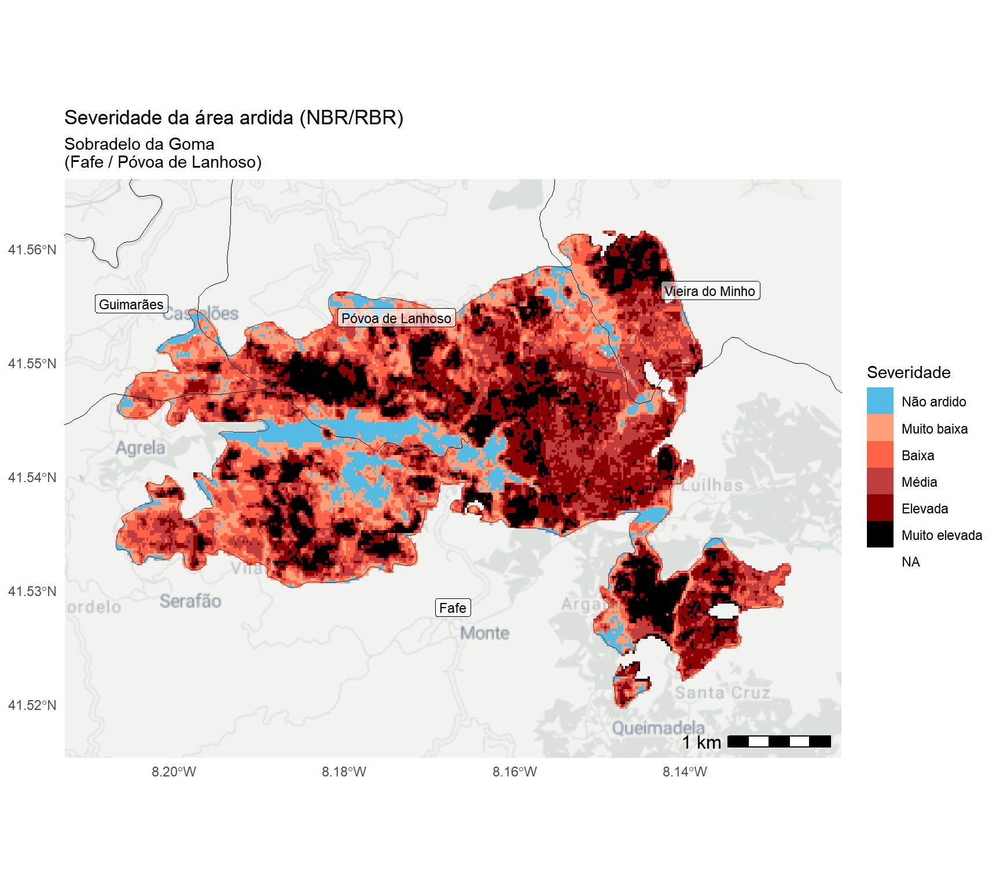
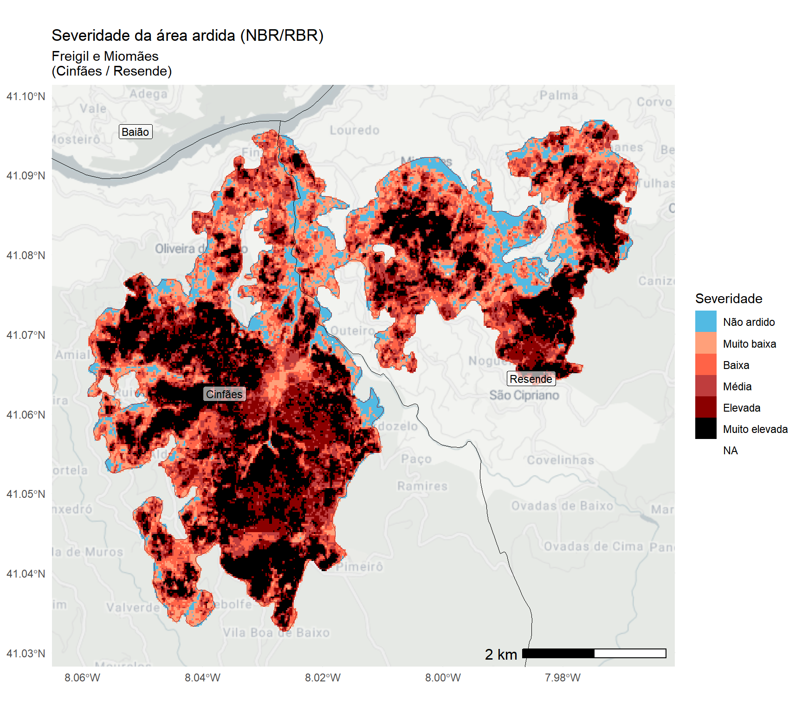

![]()

Aviso
Esta análise é preliminar e reflete os dados a que os autores tiveram acesso à data de criação deste documento. Esta análise não é definitiva e os valores poderão mudar assim que atualizações e modificações dos dados forem disponibilizadas (por razões diversas e fora do controlo dos autores).
Atualizações deste relatório serão disponibilizadas assim que modificações relevantes dos perímetros de área ardida fornecidos pelo Sistema Europeu Copernicus/EFFIS forem facultados.
As fontes de dados podem estar sujeitas a variações temporais e espaciais, imprecisões ou inexatidões de ordem diversa assim como a erros inerentes aos processos de recolha e processamento de informação completamente alheios aos autores.
Os autores deste relatório não assumem qualquer responsabilidade por decisões ou ações tomadas com base nos dados, análises ou conclusões aqui apresentadas sem a devida consideração das limitações mencionadas.
O uso inadequado ou a interpretação incorreta dos resultados, especialmente sem um conhecimento profundo das incertezas associadas, é da inteira responsabilidade de quem os utiliza. Recomenda-se que os resultados apresentados sejam sempre analisados ou interpretados com cautela, e que, se necessário, sejam complementados por outras fontes de informação e validações adicionais.
Aviso
Devido a um erro no pipeline de processamento de dados, as versões deste relatório anteriores a 17/10/2024 continham um erro sistemático no cálculo das áreas ardidas. Este erro resultou em uma sobre-estimação generalizada da área ardida, com especial impacto em grandes ocorrências.
Pedimos sinceras desculpas por qualquer inconveniente que este problema possa ter causado e que entretanto foi resolvido.
Aproveitamos também para agradecer ao utilizador F.A. pela crucial ajuda na deteção e análise deste problema.
Info
Se está a ver este relatório em um smartphone ou tablet, experimente rodar o ecrã para o formato horizontal para aceder ao índice de conteúdos (do lado direito do ecrã)
Este documento usa o ponto (.) como separador decimal e a vírgula como separador de milhares (,)
Código fonte das análises
O código R utilizado para produzir estas análises está disponível no link:
https://github.com/SeverusPT/AnaliseAreaArdida2024
Agradecimentos
Este relatório foi financiado pela Fundação para a Ciência e a Tecnologia (FCT) no âmbito do projeto SeverusPT — “Um serviço e produto de dados baseados na web para a avaliação e previsão de severidade de incêndio em Portugal continental”.
- Website: https://severus.pt/
- DOI: https://doi.org/10.54499/PCIF/RPG/0170/2019
- Referência FCT: PCIF/RPG/0170/2019


1. Material e métodos
1.1. Fontes de dados espaciais/geográficos
Para as análises realizadas neste relatório foram usados os seguintes conjuntos de dados:
Áreas ardidas do Sistema Europeu Copernicus EFFIS (European Forest Fire Information System): link geral | link dados
Carta de Uso e Ocupação do Solo - 2018: link geral | link dados
Carta de Ocupação do Solo Conjuntural - 2024 Pré-Verão DGT: link geral | link dados
Carta Administrativa Oficial de Portugal - CAOP2023 (Continente): link geral | link dados
Rede Nacional de Áreas Protegidas (RNAP)1: link geral | link dados
Zonas de Proteção Especial da Diretiva Aves (ZPE) - RN2000: link geral | link dados
Sítios da Diretiva Habitats (SIC) - RN2000: link geral | link dados
Estradas e vias de trânsito - OpenStreetMaps PT: link geral | link dados
Global ML Building Footprints (área/polígonos de edifícios): link geral-1 | link geral-2 | link dados
Rede Hidrográfica – EU-Hydro River Network Database 2006-2012 (NUTS: PT1): link geral | link dados
Dados Censos 2021 - BGRI: Link geral | link dados
Modelo Digital do Terreno - SRTM 1’’ (NASA; Gonçalves, J.A., Pinhal, A.): link geral | link dados
Percursos Pedestres (dados gentilmente cedidos por Gabriel Soares; compilação ca. 2020; fonte: https://www.percursospedestresportugal.com/)
1.2. Métodos
1.2.1. Análise e visualização de dados
Para a quantificação da área ardida, foram realizadas análises espaciais recorrendo a ferramentas de Sistemas de Informação Geográfica (SIG). Estas análises foram desenvolvidas na plataforma de computação RStudio utilizando a linguagem R, permitindo assim integrar, manipular, visualizar e processar grandes volumes de dados geoespaciais. As ferramentas empregadas para este fim incluíram uma combinação de bibliotecas especializadas no tratamento de dados vetoriais e raster, assim como para a geração de gráficos e tabelas.
Para o geoprocessamento e análise de dados vetoriais, foi utilizado o pacote sf, que facilitou o manuseio e a análise de dados espaciais em formato vetorial. Em complemento, os pacotes terra, tidyterra, raster e fasterize foram usados para o geoprocessamento e análise de dados raster, oferecendo funcionalidades robustas para a manipulação de dados em grande escala.
A visualização de dados geoespaciais foi aprimorada com o pacote ggmap, que permitiu a inclusão de basemaps em formato raster. Além disso, o pacote tidyverse foi utilizado para a manipulação, análise e agregação de dados, permitindo uma estrutura de trabalho eficiente para transformar e analisar os dados espaciais.
Para a renderização de gráficos e mapas, os pacotes ggplot2 e patchwork foram aplicados, proporcionando a criação de visualizações detalhadas e a composição de gráficos e mapas. Finalmente, a formatação e renderização de tabelas foi feita através dos pacotes knitr, kableExtra e flextable, garantindo a apresentação dos resultados tabulares.
Todo o fluxo de trabalho visou garantir a precisão e repetibilidade da análise espacial e estatística dos dados, permitindo uma compreensão abrangente das áreas ardidas e a geração de outputs rigorosos e acessíveis.
1.2.2. Quantificação da área ardida por classe de uso/coberto do solo
Tendo por base os dados de área ardida foi elaborada uma análise relativamente à distribuição dessa em função das categorias de uso/coberto do solo. Para esse efeito recorreu-se a duas bases de dados de referência para Portugal continental:
Carta de Ocupação do Solo Conjuntural para o ano de 2024 (COSc 2024, período pré-verão; Fonte: DGT) e a,
Carta de Uso e Ocupação do Solo (COS 2018, versão 2; Fonte: DGT).
No primeiro conjunto de dados – COSc 2024 – procurou-se a elevada atualidade desta base de dados para efeito da compreensão das categorias mais afetadas pelos incêndios. Enquanto que para a COS 2018 buscou-se uma complementaridade das fontes de informação, assim como maior resolução temática deste conjunto de dados (i.e., maior número de categorias e, portanto, maior grau de discriminação dos tipos de uso/coberto do solo).
1.2.3. Análise da severidade da área ardida
Acesso/descarregamento dos dados de severidade
Os dados preliminares em formato raster GeoTIFF podem ser descarregados no seguinte link (com metadados)
Estes dados são fornecidos em números inteiros (com parte negativa, mais precisamente, 32-bit signed integer) tendo sido multiplicados por um fator de escala de 10,000. Originalmente os cálculos de severidade são efetuados em números decimais mas, para poupar espaço em disco, é aplicado este fator de reescalaonamento e é feito o arredondamente/truncagem dos valores. Os valores de severidade do indicador NBR/RBR, usualmente estão entre [-6,000; 17,000] (ou seja, na escala decimal original, [-0.6; 1.7], de zonas não ardidas/em recuperação até áreas com extrema severidade).
O formato é GeoTIFF, com sistema de coordenadas WGS 1984/UTM 29N.
A severidade da área ardida foi calculada a partir de imagens do satélite ótico Sentinel-2 utilizando o índice espectral Normalized Burn Ratio (NBR), que mede a diferença da reflectância da superfície terrestre entre as bandas do infravermelho próximo (NIR) e do infravermelho médio (SWIR).
\(NBR = \frac{NIR - SWIR}{NIR + SWIR}\)
O NBR é sensível a alterações na vegetação e no solo devidas ao fogo. Para avaliar a severidade do fogo, comparou-se o NBR pré-fogo (NBR pré) com o NBR pós-fogo (NBR pós), utilizando o indicador Relativized Burn Ratio (RBR). Este indicador permite uma quantificação mais robusta das mudanças no terreno, eliminando as variações relativas entre os diferentes tipos de vegetação. A fórmula do RBR é dada por:
\(dNBR = NBR_{pré} - NBR_{pós}\)
\(RBR = \frac{dNBR}{NBR_{pré} + 1.001}\)
Este cálculo foi aplicado em imagens de satélite antes e depois do fogo para produzir mapas de severidade da área ardida.
As classes de severidade para o indicador NBR/RBR foram obtidas através da análise das distribuições para os anos 2018 - 2023 com base nos produtos gerados pelo projeto SeverusPT (para o mesmo satélite e indicador de severidade). A partição das classes foi obtida pelos percentis da distribuição de 20%, 40%… a 80% para os valores de NBR/RBR superiores a zero:
| De | Para | Nível de severidade |
|---|---|---|
| [min] | 0 | Não ardido |
| 0 | 1455 | Muito baixa |
| 1455 | 2750 | Baixa |
| 2750 | 3801 | Média |
| 3801 | 4900 | Elevada |
| 4900 | [max] | Muito elevada |
A escala apresentada na tabela, tal como os dados de severidade, foram multiplicados por um fator de escala de 10,000.
2. Área ardida em Portugal continental (2024)
Síntese geral
À data de 17/10/2024 a área ardida no ano de 2024, de acordo com os dados do Sistema Copernicus/EFFIS (European Forest Fire Information System) é igual a 140,362 hectares. De acordo com esta informação, no mês de setembro arderam 131,118 hectares dos quais 119,591 hectares ocorreram após o dia 15 de setembro de 2024 (inclusive; ou seja, correspondente 85.2% do total anual).
Segundo os dados do EFFIS, foram contabilizados 676 ocorrências de incêndio das quais 180 ocorreram após o dia 15 de setembro (inclusive), correspondente a 26.6% do total anual.
Em termos de afetação potencial de áreas com estatuto de conservação/proteção, um total de 11,754 hectares ocorreram em Rede Nacional de Áreas Protegidas (RNAP), 35,101 hectares em Sítios de Interesse Comunitário da Rede Natura 2000, e 1,417 hectares em Zonas de Proteção Especial também em contexto da Rede Natura 2000.
Em termos de afetação potencial dos cursos de água e, considerando uma estratificação pela hierarquia de Strahler 2, foram quantificados os seguintes impactos em termos de comprimento total por tipo de rio (classes de Strahler de 1 a 6):
- Classe 1: 333.7 km
- Classe 2: 101.6 km
- Classe 3: 50.2 km
- Classe 4: 63.9 km
- Classe 5: 16.5 km .
De acordo com dados do Instituto Nacional de Estatística (INE), e considerando as subsecções estatísticas constantes da Base Geográfica de Referenciação de Informação (BGRI) para os Censos de 2021, um total de 109,248 habitantes foram potencialmente afetados pelos incêndios de 2024, como residentes dentro ou nas imediações dos perímetros ardidos, com níveis muito diferenciados de impacto direto ou indireto e que os dados a que tivemos acesso não permitem estimar. Segundo este conjunto de dados também, um total de 68,099 alojamentos poderão ter sido impactados, com graus de afetação direta ou indireta muito diferenciados e que os dados não permitem caracterizar, estando localizados dentro ou nas imediações dos perímetros ardidos.
De acordo com o conjunto de dados aberto de edíficos MS Buildings Footprint, que mistura todas as tipologias de edificado (e.g., habitacional, industrial, serviços), um total de 31,630 edifícios foram potencialmente afetados pelos incêndios de 2024 com níveis muito diferenciados de impacto (que os dados a que tivemos acesso não permitem estimar), estando incluídos dentro dos perímetros de área ardida mapeados pelo sistema EFFIS.
Segundo o conjunto de dados aberto OSM – OpenStreetMap – sobre vias de trânsito/acesso/circulação e, agregando todas as tipologias existentes nesta base de dados (e.g., auto-estradas, estradas nacionais, municipais, caminhos, trilhos), foram potencialmente afetados 5,587 Km de vias.
Um total de 482.2 Km de percursos pedestres (incluindo trilhos PR e GR homologados pela FCMP - Federação de Campismo e Montanhismo de Portugal, Caminhos de Santiago, Fátima entre outras vias) foram impactadas pelos incêndios de 2024 de forma direta ou indireta e com graus de impacto muito diferenciados (que os dados a que tivemos acesso não permitem estimar), estando incluídos dentro dos perímetros de área ardida mapeados pelo sistema EFFIS.
A distribuição das ocorrências de incêndio por dimensão da área ardida é mostrada na tabela abaixo. Nesta são apresentadas a frequência absoluta e relativa (%) para o ano de 2024. Para efeito de análise mais detalhada, foram separadas as ocorrências na base de dados do EFFIS a partir de 15 de setembro. Neste caso é mostrada a frequência aboluta e relativa (tendo como denominador as ocorrências em cada categoria de dimensão da área ardida).
| Classe | Nr. ocorrências | Percentagem 2024 | Nr. ocorrências após 15 set | Percentagem classe após 15 set |
|---|---|---|---|---|
| 0-10 ha | 390 | 57.7 | 76 | 19.5 |
| 10-100 ha | 214 | 31.7 | 58 | 27.1 |
| 100-250 ha | 22 | 3.3 | 10 | 45.5 |
| 250-500 ha | 18 | 2.7 | 12 | 66.7 |
| 500-1000 ha | 12 | 1.8 | 9 | 75.0 |
| 1000-2500 ha | 11 | 1.6 | 7 | 63.6 |
| 2500-5000 ha | 3 | 0.4 | 2 | 66.7 |
| 5000-10000 ha | 4 | 0.6 | 4 | 100.0 |
| >10000 ha | 2 | 0.3 | 2 | 100.0 |


2.1. Área ardida por classe de uso/coberto do solo
Os resultados desta análise são apresentados nas subsecções seguintes tendo por base os dois conjuntos de dados de uso/ocupação do solo:
- COS conjuntural 2024 (pré-verão), e,
- COS 2018.
2.1.1. Carta de Uso e Ocupação do Solo conjuntural - COSc 2024
| Código | Classe uso/coberto | Área ardida (ha) | % ardida |
|---|---|---|---|
| 410 | Matos | 55702.9 | 39.7 |
| 312 | Eucalipto | 35415.5 | 25.2 |
| 420 | Veg. herbácea esp. | 15858.2 | 11.3 |
| 313 | Outras folhosas | 11379.2 | 8.1 |
| 321 | Pinheiro bravo | 11304.3 | 8.1 |
| 213 | Outras áreas agrícolas | 5106.8 | 3.6 |
| 500 | Sup. s/ vegetação | 3055.0 | 2.2 |
| 100 | Artificializado | 701.8 | 0.5 |
| 211 | Culturas anuais out/inv | 679.4 | 0.5 |
| 212 | Culturas anuais pri/ver | 479.4 | 0.3 |
| 323 | Outras resinosas | 277.6 | 0.2 |
| 311 | Sobreiro e azinheira | 204.8 | 0.1 |
| 322 | Pinheiro manso | 93.7 | 0.1 |
| 620 | Água | 67.5 | 0.0 |
| 610 | Zonas húmidas | 19.6 | 0.0 |
2.1.2. Carta de Ocupação do Solo - COS 2018
| Classe uso/coberto | Área ardida (ha) | % ardida |
|---|---|---|
| Matos | 43047.7 | 30.7 |
| Florestas de eucalipto | 39667.8 | 28.3 |
| Florestas de pinheiro bravo | 27745.7 | 19.8 |
| Florestas de outras folhosas | 7070.6 | 5.0 |
| Florestas de outros carvalhos | 5231.4 | 3.7 |
| Culturas temporárias de sequeiro e regadio | 4612.3 | 3.3 |
| Vegetação esparsa | 2262.6 | 1.6 |
| Agricultura com espaços naturais e seminaturais | 1646.5 | 1.2 |
| Mosaicos culturais e parcelares complexos | 1547.2 | 1.1 |

3. Área ardida por município
Nesta secção do relatório, apresentamos uma análise detalhada das áreas ardidas no ano de 2024, com enfoque nos municípios de Portugal continental. O objetivo desta análise é avaliar a distribuição das áreas afetadas pelos incêndios em cada município.
| Município | Área ardida 2024 (hectares) | % área do concelho |
|---|---|---|
| Castro Daire | 16839.5 | 44.4 |
| São Pedro do Sul | 12233.9 | 35.1 |
| Albergaria-a-Velha | 8363.8 | 52.7 |
| Águeda | 8121.6 | 24.2 |
| Baião | 5915.5 | 33.9 |
| Vila Pouca de Aguiar | 5612.4 | 12.8 |
| Arouca | 5384.4 | 16.4 |
| Sever do Vouga | 4761.3 | 36.7 |
| Penalva do Castelo | 4661.4 | 34.7 |
| Mangualde | 4243.0 | 19.4 |
| Cabeceiras de Basto | 3879.0 | 16.0 |
| Cinfães | 3770.0 | 15.8 |
| Amarante | 3636.0 | 12.1 |
| Carregal do Sal | 3614.8 | 30.9 |
| Marco de Canaveses | 3324.8 | 16.5 |
| Fafe | 2975.4 | 13.6 |
| Gondomar | 2746.7 | 20.8 |
| Arcos de Valdevez | 2581.1 | 5.8 |
| Nelas | 2424.4 | 19.3 |
| Resende | 2161.4 | 17.5 |
| Póvoa de Lanhoso | 2079.8 | 15.4 |
| Celorico de Basto | 1846.3 | 10.2 |
| Oliveira de Azeméis | 1784.9 | 11.1 |
| Penafiel | 1761.1 | 8.3 |
| Chaves | 1646.0 | 2.8 |
| Paredes | 1557.5 | 9.9 |
| Miranda do Douro | 1523.3 | 3.1 |
| Vila Real | 1474.4 | 3.9 |
| Vila Nova de Paiva | 1226.3 | 7.0 |
| Ribeira de Pena | 1015.5 | 4.7 |
| Fundão | 1007.5 | 1.4 |
| Guimarães | 921.1 | 3.8 |
| Vinhais | 854.4 | 1.2 |
| Tábua | 673.1 | 3.4 |
| Peso da Régua | 672.4 | 7.1 |
| Valença | 662.2 | 5.7 |
| Lamego | 602.8 | 3.6 |
| Sesimbra | 598.6 | 3.1 |
| Melgaço | 561.7 | 2.4 |
| Felgueiras | 529.7 | 4.6 |
| Montalegre | 519.6 | 0.6 |
| Vimioso | 506.3 | 1.1 |
| Vale de Cambra | 497.6 | 3.4 |
| Alijó | 478.0 | 1.6 |
| Vieira do Minho | 471.6 | 2.2 |
| Vila Verde | 455.8 | 2.0 |
| Bragança | 455.7 | 0.4 |
| Santo Tirso | 442.3 | 3.2 |
| Ponte da Barca | 387.3 | 2.1 |
| Castelo Branco | 378.7 | 0.3 |
| Oliveira do Hospital | 328.7 | 1.4 |
| Arganil | 313.9 | 0.9 |
| Terras de Bouro | 297.2 | 1.1 |
| Paços de Ferreira | 293.2 | 4.1 |
| Seixal | 236.2 | 2.5 |
| Ponte de Lima | 224.2 | 0.7 |
| Freixo de Espada à Cinta | 220.6 | 0.9 |
| Mirandela | 219.7 | 0.3 |
| Aveiro | 169.2 | 0.9 |
| Celorico da Beira | 158.9 | 0.6 |
| Fornos de Algodres | 158.2 | 1.2 |
| São João da Pesqueira | 156.0 | 0.6 |
| Lousada | 149.1 | 1.6 |
| Sátão | 145.4 | 0.7 |
| Portalegre | 142.8 | 0.3 |
| Viana do Castelo | 138.0 | 0.4 |
| Seia | 131.7 | 0.3 |
| Ourém | 127.4 | 0.3 |
| Braga | 111.4 | 0.6 |
| Vila Nova de Famalicão | 104.6 | 0.5 |
| Coimbra | 102.4 | 0.3 |
| Pombal | 96.3 | 0.2 |
| Paredes de Coura | 93.4 | 0.7 |
| Cascais | 91.8 | 0.9 |
| Barcelos | 90.1 | 0.2 |
| Vila Flor | 83.1 | 0.3 |
| Aguiar da Beira | 75.7 | 0.4 |
| Gouveia | 64.3 | 0.2 |
| Tabuaço | 60.5 | 0.5 |
| Santa Marta de Penaguião | 56.5 | 0.8 |
| Boticas | 55.1 | 0.2 |
| Alcácer do Sal | 54.1 | 0.0 |


4. Área ardida em espaços de proteção/conservação
Nesta secção apresenta-se uma análise da área ardida em espaços de proteção e conservação em Portugal continental, abordando as diferentes redes e áreas de interesse. Esta análise está subdividida em três partes principais:
A primeira subsecção (4.1) incidirá sobre a Rede Nacional de Áreas Protegidas (RNAP), explorando a extensão dos incêndios em territórios que possuem um elevado valor ecológico, património natural e biodiversidade;
Na subsecção (4.2), será analisada a área ardida nos Sítios de Interesse Comunitário (SIC), integrados na Rede Natura 2000, com especial enfoque nos impactos sobre os habitats naturais protegidos;
Por fim, a subsecção (4.3) examinará as Zonas de Proteção Especial (ZPE), também parte da Rede Natura 2000, discutindo as áreas afetadas em locais designados para a conservação de aves e outras espécies prioritárias.
Esta análise visa avaliar os impactos dos incêndios nas áreas de maior relevância em termos de património natural com vista a suportar potenciais medidas de recuperação e prevenção nesses espaços.
4.1. Rede Nacional de Áreas Protegidas (RNAP)
| Sigla | Nome AP | Área ardida (ha) | % AP ardida |
|---|---|---|---|
| PPRSA | Serra da Aboboreira | 8025.8 | 39.4 |
| PPRPSP | Parque das Serras do Porto | 2166.3 | 36.3 |
| PNPG | Peneda-Gerês | 627.0 | 0.9 |
| PNM | Montesinho | 453.8 | 0.6 |
| PNDI | Douro Internacional | 221.4 | 0.3 |
| PNSE | Serra da Estrela | 96.0 | 0.1 |
| PNSC | Sintra-Cascais | 91.8 | 0.6 |
| PNRVT | Vale do Tua | 30.2 | 0.1 |
| PNAL | Alvão | 28.4 | 0.4 |
| PPLSSA | Serras do Socorro e Archeira | 7.5 | 0.6 |
| PNSAC | Serras de Aire e Candeeiros | 5.1 | 0.0 |
| RNDSJ | Dunas de São Jacinto | 0.5 | 0.0 |
4.1.1. Área ardida na RNAP por classe de uso/ocupação do solo (COSc 2024)
| Cod. | Nome | Matos | Veg. herbácea esp. | Sup. s/ vegetação | Eucalipto | Outras folhosas | Pinheiro bravo | Pinheiro manso | Outras resinosas | Culturas anuais out/inv | Culturas anuais pri/ver | Outras áreas agrícolas | Artificializado | Água |
|---|---|---|---|---|---|---|---|---|---|---|---|---|---|---|
| PPRSA | Serra da Aboboreira | 4470.2 | 911.2 | 132.8 | 636.2 | 1388.4 | 291.8 | 0.0 | 20.2 | 34.4 | 87.1 | 158.1 | 16.5 | 0 |
| PPRPSP | Parque das Serras do Porto | 278.9 | 228.7 | 177.9 | 1381.6 | 60.9 | 15.2 | 0.0 | 0.0 | 6.1 | 4.7 | 15.4 | 14.2 | 0 |
| PNPG | Peneda-Gerês | 476.3 | 159.0 | 6.4 | 0.0 | 7.1 | 2.3 | 0.0 | 4.8 | 0.0 | 0.0 | 0.2 | 0.0 | 0 |
| PNM | Montesinho | 375.0 | 33.5 | 21.2 | 0.0 | 17.2 | 11.2 | 0.0 | 2.4 | 0.0 | 0.0 | 3.9 | 0.2 | 0 |
| PNDI | Douro Internacional | 87.2 | 112.0 | 2.3 | 0.2 | 6.7 | 0.7 | 0.0 | 0.0 | 0.0 | 0.0 | 18.5 | 0.0 | 0 |
| PNSE | Serra da Estrela | 48.8 | 39.5 | 11.8 | 0.8 | 1.9 | 0.3 | 0.0 | 0.0 | 0.1 | 0.0 | 0.1 | 0.0 | 0 |
| PNSC | Sintra-Cascais | 70.2 | 5.5 | 0.7 | 2.2 | 0.5 | 11.6 | 1.9 | 0.1 | 0.2 | 0.0 | 1.1 | 1.5 | 0 |
| PNRVT | Vale do Tua | 16.9 | 2.0 | 0.1 | 0.0 | 1.4 | 5.4 | 0.0 | 0.0 | 0.0 | 0.0 | 6.8 | 0.0 | 0 |
| PNAL | Alvão | 13.9 | 14.1 | 2.8 | 0.0 | 0.0 | 0.0 | 0.0 | 0.0 | 0.0 | 0.0 | 0.0 | 0.0 | 0 |
| PPLSSA | Serras do Socorro e Archeira | 3.2 | 4.8 | 0.2 | 0.1 | 0.1 | 0.0 | 0.0 | 0.0 | 0.0 | 0.0 | 0.0 | 0.0 | 0 |
| PNSAC | Serras de Aire e Candeeiros | 6.1 | 0.2 | 0.0 | 0.1 | 0.0 | 0.3 | 0.0 | 0.0 | 0.0 | 0.0 | 0.0 | 0.0 | 0 |
4.1.2. Área ardida na RNAP por classe de uso/ocupação do solo (COS 2018)
| Cod. | Nome | Matos | Vegetação esparsa | Florestas de eucalipto | Florestas de pinheiro bravo | Florestas de outros carvalhos | Florestas de outras folhosas | Florestas de espécies invasoras | Florestas de outras resinosas | Florestas de castanheiro | Olivais | Pomares | Vinhas | Culturas temporárias de sequeiro e regadio | Agricultura com espaços naturais e seminaturais | Pastagens melhoradas | Pastagens espontâneas | Mosaicos culturais e parcelares complexos | Agricultura protegida e viveiros | Tecido edificado contínuo predominantemente horizontal | Tecido edificado contínuo predominantemente vertical | Tecido edificado descontínuo | Tecido edificado descontínuo esparso | Áreas em construção | Outros equipamentos e instalações turísticas | Instalações desportivas | Rede viária e espaços associados | Indústria | Cursos de água naturais |
|---|---|---|---|---|---|---|---|---|---|---|---|---|---|---|---|---|---|---|---|---|---|---|---|---|---|---|---|---|---|
| PPRSA | Serra da Aboboreira | 4353.6 | 121.1 | 687.2 | 504.5 | 1167.2 | 626.4 | 3.1 | 0.0 | 9.0 | 0.3 | 15.1 | 14.6 | 375.8 | 47.4 | 37.0 | 0.0 | 5.8 | 2.6 | 6.4 | 0 | 22.8 | 15.6 | 0.0 | 0.0 | 0.2 | 10.1 | 0.1 | 0.0 |
| PPRPSP | Parque das Serras do Porto | 275.7 | 0.0 | 1724.1 | 49.5 | 0.0 | 40.5 | 0.0 | 0.0 | 0.0 | 0.0 | 1.3 | 2.7 | 39.5 | 1.9 | 0.0 | 0.0 | 0.3 | 0.0 | 0.0 | 0 | 0.6 | 9.7 | 0.0 | 0.0 | 0.0 | 20.3 | 0.0 | 0.1 |
| PNPG | Peneda-Gerês | 377.6 | 180.5 | 0.0 | 37.2 | 12.7 | 3.9 | 0.0 | 14.0 | 0.0 | 0.0 | 0.0 | 0.0 | 0.0 | 0.0 | 0.2 | 0.0 | 0.0 | 0.0 | 0.0 | 0 | 0.0 | 0.0 | 0.0 | 0.0 | 0.0 | 0.0 | 0.0 | 0.8 |
| PNM | Montesinho | 428.5 | 0.0 | 0.0 | 3.2 | 1.3 | 2.3 | 0.0 | 10.2 | 3.1 | 0.0 | 1.8 | 0.0 | 0.0 | 2.8 | 0.0 | 0.0 | 0.0 | 0.0 | 0.0 | 0 | 0.0 | 0.0 | 0.0 | 0.5 | 0.0 | 0.0 | 0.0 | 0.0 |
| PNDI | Douro Internacional | 180.2 | 0.0 | 0.0 | 0.0 | 2.0 | 15.4 | 0.0 | 0.0 | 0.0 | 22.4 | 0.4 | 0.8 | 0.0 | 0.0 | 0.0 | 0.0 | 0.0 | 0.0 | 0.0 | 0 | 0.0 | 0.0 | 0.0 | 0.0 | 0.0 | 0.0 | 0.0 | 0.0 |
| PNSE | Serra da Estrela | 94.1 | 0.0 | 0.0 | 0.0 | 0.0 | 0.0 | 0.0 | 0.0 | 0.0 | 0.0 | 0.0 | 0.0 | 1.1 | 0.0 | 0.0 | 0.0 | 0.7 | 0.0 | 0.0 | 0 | 0.0 | 0.0 | 0.0 | 0.0 | 0.0 | 0.0 | 0.0 | 0.0 |
| PNSC | Sintra-Cascais | 73.0 | 0.0 | 0.0 | 14.7 | 0.0 | 0.8 | 0.0 | 0.0 | 0.0 | 0.0 | 0.0 | 0.0 | 0.2 | 0.0 | 0.0 | 0.0 | 0.0 | 0.0 | 0.0 | 0 | 2.5 | 0.0 | 0.6 | 0.0 | 0.0 | 0.0 | 0.0 | 0.0 |
| PNRVT | Vale do Tua | 7.7 | 0.0 | 0.0 | 12.2 | 0.0 | 0.0 | 0.0 | 0.0 | 0.0 | 8.9 | 0.0 | 1.4 | 0.0 | 0.0 | 0.0 | 0.0 | 0.0 | 0.0 | 0.0 | 0 | 0.0 | 0.0 | 0.0 | 0.0 | 0.0 | 0.0 | 0.0 | 0.0 |
| PNAL | Alvão | 22.7 | 5.7 | 0.0 | 0.0 | 0.0 | 0.0 | 0.0 | 0.0 | 0.0 | 0.0 | 0.0 | 0.0 | 0.0 | 0.0 | 0.0 | 0.0 | 0.0 | 0.0 | 0.0 | 0 | 0.0 | 0.0 | 0.0 | 0.0 | 0.0 | 0.0 | 0.0 | 0.0 |
| PPLSSA | Serras do Socorro e Archeira | 7.3 | 0.0 | 0.0 | 0.0 | 0.0 | 0.0 | 0.0 | 0.0 | 0.0 | 0.0 | 0.0 | 0.0 | 0.0 | 0.0 | 0.0 | 0.2 | 0.0 | 0.0 | 0.0 | 0 | 0.0 | 0.0 | 0.0 | 0.0 | 0.0 | 0.0 | 0.0 | 0.0 |
| PNSAC | Serras de Aire e Candeeiros | 2.2 | 0.0 | 0.0 | 2.9 | 0.0 | 0.0 | 0.0 | 0.0 | 0.0 | 0.0 | 0.0 | 0.0 | 0.0 | 0.0 | 0.0 | 0.0 | 0.0 | 0.0 | 0.0 | 0 | 0.0 | 0.0 | 0.0 | 0.0 | 0.0 | 0.0 | 0.0 | 0.0 |
4.1.3. Área ardida na RNAP por classe de severidade
| Cod. | Nome | Não ardido | Muito baixa | Baixa | Média | Elevada | Muito elevada |
|---|---|---|---|---|---|---|---|
| PPRSA | Serra da Aboboreira | 364.4 | 901.3 | 1178.5 | 1175.5 | 1530.6 | 3093.0 |
| PPRPSP | Parque das Serras do Porto | 66.8 | 235.8 | 437.6 | 462.6 | 472.6 | 522.5 |
| PNPG | Peneda-Gerês | 11.0 | 74.8 | 80.6 | 75.1 | 83.9 | 355.4 |
| PNM | Montesinho | 3.7 | 23.8 | 37.0 | 58.4 | 123.0 | 226.2 |
| PNDI | Douro Internacional | 1.2 | 9.8 | 22.6 | 24.1 | 46.9 | 127.3 |
| PNSE | Serra da Estrela | 4.4 | 12.7 | 19.0 | 26.7 | 31.0 | 16.0 |
| PNSC | Sintra-Cascais | 0.3 | 10.5 | 9.8 | 8.8 | 17.0 | 52.0 |
| PNRVT | Vale do Tua | 0.3 | 5.0 | 8.1 | 6.8 | 7.8 | 6.3 |
| PNAL | Alvão | 0.1 | 3.4 | 11.1 | 7.8 | 6.3 | 4.3 |
| PPLSSA | Serras do Socorro e Archeira | 0.8 | 2.9 | 3.4 | 1.3 | 0.9 | 0.0 |
| PNSAC | Serras de Aire e Candeeiros | 0.2 | 4.0 | 3.2 | 0.6 | 0.0 | 0.0 |
4.2. Rede Natura 2000 - Sítios de Interesse Comunitário (SIC)
| Código SIC | Nome SIC | Área ardida (ha) | % sítio ardido |
|---|---|---|---|
| PTCON0025 | Montemuro | 8786.1 | 22.7 |
| PTCON0047 | Serras da Freita e Arada | 7131.1 | 24.9 |
| PTCON0003 | Alvão/Marão | 7113.8 | 12.1 |
| PTCON0059 | Rio Paiva | 5980.4 | 41.2 |
| PTCON0026 | Rio Vouga | 1873.5 | 67.0 |
| PTCON0027 | Carregal do Sal | 1352.5 | 14.3 |
| PTCON0001 | Peneda-Gerês | 1148.5 | 1.3 |
| PTCON0054 | Fernão Ferro/Lagoa de Albufeira | 817.1 | 18.9 |
| PTCON0002 | Montesinho/Nogueira | 465.6 | 0.4 |
| PTCON0039 | Serra d'Arga | 98.8 | 2.2 |
| PTCON0014 | Serra da Estrela | 96.0 | 0.1 |
| PTCON0008 | Sintra/Cascais | 91.8 | 0.6 |
| PTCON0053 | Moura/Barrancos | 44.5 | 0.1 |
| PTCON0060 | Serra da Lousã | 27.8 | 0.2 |
| PTCON0021 | Rios Sabor e Maçãs | 18.9 | 0.1 |
| PTCON0061 | Ria de Aveiro | 16.4 | 0.0 |
| PTCON0015 | Serras de Aire e Candeeiros | 15.5 | 0.0 |
| PTCON0040 | Corno do Bico | 7.5 | 0.1 |
| PTCON0007 | São Mamede | 5.9 | 0.0 |
| PTCON0024 | Valongo | 4.0 | 0.2 |
| PTCON0022 | Douro Internacional | 2.7 | 0.0 |
| PTCON0020 | Rio Lima | 1.9 | 0.0 |
| PTCON0037 | Monchique | 0.7 | 0.0 |
4.2.1. Área ardida nos SICs por classe de uso/ocupação do solo (COSc 2024)
| Cod. | Nome | Matos | Veg. herbácea esp. | Sup. s/ vegetação | Eucalipto | Outras folhosas | Sobreiro e azinheira | Pinheiro bravo | Pinheiro manso | Outras resinosas | Culturas anuais out/inv | Culturas anuais pri/ver | Outras áreas agrícolas | Artificializado | Zonas húmidas | Água |
|---|---|---|---|---|---|---|---|---|---|---|---|---|---|---|---|---|
| PTCON0025 | Montemuro | 5987.7 | 1213.6 | 65.0 | 586.2 | 501.3 | 0.0 | 309.9 | 0.8 | 1.9 | 14.1 | 4.4 | 262.5 | 6.1 | 0.0 | 0.5 |
| PTCON0003 | Alvão/Marão | 3492.2 | 2134.4 | 760.3 | 8.1 | 407.0 | 4.8 | 70.4 | 0.0 | 150.8 | 12.9 | 30.5 | 113.6 | 30.2 | 0.0 | 0.0 |
| PTCON0047 | Serras da Freita e Arada | 5015.3 | 807.2 | 129.2 | 726.4 | 275.4 | 0.0 | 123.8 | 1.7 | 1.1 | 2.1 | 3.8 | 82.7 | 5.2 | 0.0 | 0.2 |
| PTCON0059 | Rio Paiva | 2264.0 | 274.5 | 30.9 | 1811.5 | 743.5 | 0.0 | 596.0 | 2.8 | 1.3 | 19.0 | 13.1 | 230.2 | 18.3 | 0.0 | 9.8 |
| PTCON0026 | Rio Vouga | 271.8 | 96.0 | 27.2 | 1150.9 | 107.9 | 0.0 | 108.0 | 3.9 | 0.2 | 4.6 | 9.6 | 56.0 | 27.8 | 1.0 | 19.9 |
| PTCON0027 | Carregal do Sal | 652.9 | 232.0 | 5.5 | 264.9 | 86.5 | 0.0 | 58.0 | 2.8 | 0.3 | 3.1 | 0.1 | 54.1 | 0.1 | 0.0 | 3.8 |
| PTCON0001 | Peneda-Gerês | 938.0 | 235.3 | 9.1 | 5.0 | 25.3 | 0.0 | 2.6 | 0.0 | 5.3 | 0.0 | 0.1 | 0.5 | 0.0 | 0.0 | 0.0 |
| PTCON0054 | Fernão Ferro/Lagoa de Albufeira | 108.6 | 227.6 | 33.9 | 1.4 | 0.1 | 0.0 | 421.6 | 20.2 | 0.0 | 0.9 | 0.0 | 0.1 | 0.0 | 12.1 | 2.0 |
| PTCON0002 | Montesinho/Nogueira | 385.3 | 33.9 | 21.2 | 0.0 | 18.0 | 0.0 | 12.9 | 0.0 | 2.4 | 0.0 | 0.0 | 3.9 | 0.2 | 0.0 | 0.0 |
| PTCON0039 | Serra d'Arga | 65.6 | 39.7 | 0.2 | 0.0 | 0.0 | 0.0 | 0.0 | 0.0 | 0.0 | 0.0 | 0.0 | 0.0 | 0.0 | 0.0 | 0.0 |
| PTCON0014 | Serra da Estrela | 48.8 | 39.5 | 11.8 | 0.8 | 1.9 | 0.0 | 0.3 | 0.0 | 0.0 | 0.1 | 0.0 | 0.1 | 0.0 | 0.0 | 0.0 |
| PTCON0008 | Sintra/Cascais | 70.2 | 5.5 | 0.7 | 2.2 | 0.5 | 0.0 | 11.6 | 1.9 | 0.1 | 0.2 | 0.0 | 1.1 | 1.5 | 0.0 | 0.0 |
| PTCON0053 | Moura/Barrancos | 1.2 | 27.1 | 0.9 | 0.0 | 0.0 | 13.1 | 0.0 | 0.0 | 0.0 | 0.0 | 0.0 | 4.4 | 0.0 | 0.0 | 0.2 |
| PTCON0060 | Serra da Lousã | 1.9 | 24.2 | 5.1 | 0.0 | 0.2 | 0.0 | 0.0 | 0.0 | 0.1 | 0.0 | 0.0 | 0.0 | 0.0 | 0.0 | 0.0 |
| PTCON0021 | Rios Sabor e Maçãs | 8.3 | 8.3 | 3.1 | 0.0 | 0.0 | 0.0 | 0.0 | 0.0 | 0.0 | 0.0 | 0.0 | 0.3 | 0.0 | 0.0 | 0.0 |
| PTCON0061 | Ria de Aveiro | 0.8 | 3.9 | 0.2 | 2.9 | 0.8 | 0.0 | 1.0 | 0.0 | 0.0 | 5.2 | 3.1 | 0.1 | 0.0 | 0.0 | 0.0 |
| PTCON0015 | Serras de Aire e Candeeiros | 16.8 | 0.4 | 0.1 | 0.2 | 0.2 | 0.0 | 0.3 | 0.0 | 0.0 | 0.0 | 0.0 | 0.0 | 0.0 | 0.0 | 0.0 |
| PTCON0040 | Corno do Bico | 8.0 | 0.0 | 0.0 | 0.0 | 0.4 | 0.0 | 0.0 | 0.0 | 0.0 | 0.0 | 0.0 | 0.0 | 0.0 | 0.0 | 0.0 |
| PTCON0007 | São Mamede | 0.5 | 6.2 | 0.1 | 0.0 | 0.0 | 0.0 | 0.0 | 0.0 | 0.0 | 0.0 | 0.0 | 0.0 | 0.0 | 0.0 | 0.0 |
| PTCON0024 | Valongo | 0.7 | 1.5 | 2.3 | 0.1 | 0.9 | 0.0 | 0.1 | 0.0 | 0.0 | 0.0 | 0.0 | 0.0 | 0.0 | 0.0 | 0.0 |
| PTCON0022 | Douro Internacional | 0.8 | 0.5 | 0.0 | 0.0 | 0.0 | 0.0 | 0.0 | 0.0 | 0.0 | 0.0 | 0.0 | 2.0 | 0.0 | 0.0 | 0.0 |
| PTCON0020 | Rio Lima | 0.0 | 0.0 | 0.0 | 0.9 | 0.1 | 0.0 | 1.2 | 0.0 | 0.0 | 0.0 | 0.0 | 0.0 | 0.0 | 0.0 | 0.0 |
| PTCON0037 | Monchique | 0.5 | 0.0 | 0.0 | 0.5 | 0.0 | 0.0 | 0.0 | 0.0 | 0.0 | 0.0 | 0.0 | 0.0 | 0.0 | 0.0 | 0.0 |
4.2.2. Área ardida nos SICs por classe de uso/ocupação do solo (COS 2018)
| Cod. | Nome | Matos | Vegetação esparsa | Rocha nua | Florestas de eucalipto | Florestas de pinheiro bravo | Florestas de sobreiro | Florestas de azinheira | Florestas de outros carvalhos | Florestas de outras folhosas | Florestas de espécies invasoras | Florestas de pinheiro manso | Florestas de outras resinosas | Florestas de castanheiro | SAF de azinheira | SAF de outras misturas | Olivais | Pomares | Vinhas | Culturas temporárias de sequeiro e regadio | Culturas temporárias e/ou pastagens melhoradas associadas a olival | Culturas temporárias e/ou pastagens melhoradas associadas a vinha | Agricultura com espaços naturais e seminaturais | Pastagens melhoradas | Pastagens espontâneas | Mosaicos culturais e parcelares complexos | Tecido edificado contínuo predominantemente horizontal | Tecido edificado descontínuo | Tecido edificado descontínuo esparso | Áreas em construção | Espaços vazios sem construção | Outros equipamentos e instalações turísticas | Instalações desportivas | Infraestruturas de produção de energia renovável | Rede viária e espaços associados | Rede ferroviária e espaços associados | Indústria | Pedreiras | Cursos de água naturais | Lagos e lagoas interiores artificiais | Albufeiras de barragens | Charcas | Pauis | Equipamentos culturais |
|---|---|---|---|---|---|---|---|---|---|---|---|---|---|---|---|---|---|---|---|---|---|---|---|---|---|---|---|---|---|---|---|---|---|---|---|---|---|---|---|---|---|---|---|---|
| PTCON0025 | Montemuro | 6111.8 | 158.8 | 2.8 | 597.1 | 766.7 | 0.0 | 0.0 | 415.1 | 130.3 | 0.0 | 0.0 | 7.4 | 27.5 | 0 | 0.0 | 2.8 | 58.3 | 4.4 | 249.7 | 0.6 | 2.4 | 110.2 | 46.7 | 65.1 | 7.7 | 2.3 | 12.1 | 4.6 | 0.0 | 0 | 0.0 | 1.2 | 0.0 | 0.0 | 0.0 | 0.0 | 0.0 | 0.0 | 0 | 0.7 | 0.0 | 0.0 | 0.0 |
| PTCON0047 | Serras da Freita e Arada | 4739.9 | 147.3 | 5.2 | 757.6 | 896.0 | 6.1 | 24.2 | 134.1 | 238.0 | 1.5 | 0.0 | 0.0 | 2.4 | 0 | 0.0 | 0.0 | 0.0 | 0.0 | 61.3 | 0.0 | 0.0 | 85.2 | 1.1 | 0.0 | 0.0 | 16.2 | 8.9 | 0.0 | 0.0 | 0 | 0.0 | 0.0 | 1.3 | 0.0 | 0.0 | 0.0 | 0.0 | 0.0 | 0 | 0.0 | 0.0 | 0.0 | 4.9 |
| PTCON0003 | Alvão/Marão | 4246.3 | 926.3 | 69.6 | 5.9 | 329.7 | 6.3 | 0.0 | 512.0 | 130.8 | 0.0 | 0.0 | 493.8 | 0.0 | 0 | 0.0 | 0.0 | 4.3 | 0.0 | 94.9 | 0.0 | 0.0 | 25.9 | 116.7 | 0.0 | 0.0 | 7.4 | 7.1 | 0.0 | 0.4 | 0 | 0.0 | 0.0 | 0.0 | 66.9 | 0.0 | 0.6 | 68.8 | 0.0 | 0 | 0.0 | 0.0 | 0.0 | 0.0 |
| PTCON0059 | Rio Paiva | 1393.5 | 22.7 | 0.0 | 1891.1 | 1423.7 | 8.7 | 0.0 | 159.2 | 467.5 | 7.3 | 0.0 | 0.0 | 8.6 | 0 | 0.0 | 29.0 | 35.7 | 2.6 | 231.4 | 0.0 | 0.0 | 108.1 | 9.4 | 15.4 | 16.1 | 5.4 | 23.8 | 18.7 | 0.0 | 0 | 0.0 | 0.0 | 0.0 | 8.5 | 0.0 | 5.8 | 4.5 | 83.7 | 0 | 0.0 | 0.0 | 0.0 | 0.0 |
| PTCON0026 | Rio Vouga | 37.4 | 0.0 | 0.0 | 1323.9 | 184.1 | 0.0 | 0.0 | 1.1 | 103.9 | 17.0 | 0.0 | 0.0 | 0.0 | 0 | 0.0 | 0.0 | 6.4 | 4.9 | 41.9 | 0.0 | 1.2 | 6.4 | 0.0 | 4.6 | 28.9 | 0.1 | 10.4 | 14.4 | 1.7 | 0 | 1.4 | 0.0 | 0.0 | 31.2 | 2.8 | 2.8 | 1.7 | 44.2 | 0 | 0.0 | 0.0 | 1.0 | 0.0 |
| PTCON0027 | Carregal do Sal | 290.9 | 80.8 | 0.0 | 241.9 | 365.0 | 0.0 | 0.0 | 30.6 | 51.6 | 124.1 | 68.4 | 6.2 | 0.0 | 0 | 1.2 | 6.5 | 0.0 | 1.9 | 8.3 | 6.9 | 0.0 | 11.6 | 2.0 | 3.1 | 31.2 | 0.0 | 0.3 | 0.2 | 0.0 | 0 | 0.0 | 0.0 | 0.0 | 0.0 | 0.0 | 0.0 | 3.9 | 16.0 | 0 | 0.0 | 0.0 | 0.0 | 0.0 |
| PTCON0001 | Peneda-Gerês | 861.9 | 193.0 | 0.0 | 4.6 | 38.8 | 0.0 | 0.0 | 17.0 | 9.2 | 0.0 | 0.0 | 22.2 | 0.0 | 0 | 0.0 | 0.0 | 0.0 | 0.0 | 0.3 | 0.0 | 0.0 | 0.1 | 0.3 | 0.0 | 0.0 | 0.0 | 0.0 | 0.3 | 0.0 | 0 | 0.0 | 0.0 | 0.0 | 0.0 | 0.0 | 0.0 | 0.0 | 0.8 | 0 | 0.0 | 0.0 | 0.0 | 0.0 |
| PTCON0054 | Fernão Ferro/Lagoa de Albufeira | 7.5 | 0.0 | 0.0 | 0.0 | 731.4 | 0.0 | 0.0 | 0.0 | 0.0 | 0.0 | 59.4 | 0.0 | 0.0 | 0 | 0.0 | 0.0 | 0.0 | 0.0 | 2.3 | 0.0 | 0.0 | 0.0 | 0.0 | 0.0 | 0.0 | 0.0 | 0.0 | 0.0 | 0.0 | 0 | 0.0 | 0.0 | 0.0 | 0.0 | 0.0 | 0.0 | 0.0 | 0.0 | 0 | 0.0 | 2.9 | 13.6 | 0.0 |
| PTCON0002 | Montesinho/Nogueira | 428.5 | 0.0 | 0.0 | 0.0 | 14.4 | 0.0 | 0.0 | 1.9 | 2.3 | 0.0 | 0.0 | 10.2 | 3.1 | 0 | 0.0 | 0.0 | 1.8 | 0.0 | 0.0 | 0.0 | 0.0 | 2.8 | 0.0 | 0.0 | 0.0 | 0.0 | 0.0 | 0.0 | 0.0 | 0 | 0.5 | 0.0 | 0.0 | 0.0 | 0.0 | 0.0 | 0.0 | 0.0 | 0 | 0.0 | 0.0 | 0.0 | 0.0 |
| PTCON0039 | Serra d'Arga | 93.9 | 3.9 | 0.0 | 0.0 | 0.0 | 0.0 | 0.0 | 0.0 | 1.0 | 0.0 | 0.0 | 0.0 | 0.0 | 0 | 0.0 | 0.0 | 0.0 | 0.0 | 0.0 | 0.0 | 0.0 | 0.0 | 0.0 | 0.0 | 0.0 | 0.0 | 0.0 | 0.0 | 0.0 | 0 | 0.0 | 0.0 | 0.0 | 0.0 | 0.0 | 0.0 | 0.0 | 0.0 | 0 | 0.0 | 0.0 | 0.0 | 0.0 |
| PTCON0014 | Serra da Estrela | 94.1 | 0.0 | 0.0 | 0.0 | 0.0 | 0.0 | 0.0 | 0.0 | 0.0 | 0.0 | 0.0 | 0.0 | 0.0 | 0 | 0.0 | 0.0 | 0.0 | 0.0 | 1.1 | 0.0 | 0.0 | 0.0 | 0.0 | 0.0 | 0.7 | 0.0 | 0.0 | 0.0 | 0.0 | 0 | 0.0 | 0.0 | 0.0 | 0.0 | 0.0 | 0.0 | 0.0 | 0.0 | 0 | 0.0 | 0.0 | 0.0 | 0.0 |
| PTCON0008 | Sintra/Cascais | 73.0 | 0.0 | 0.0 | 0.0 | 14.7 | 0.0 | 0.0 | 0.0 | 0.8 | 0.0 | 0.0 | 0.0 | 0.0 | 0 | 0.0 | 0.0 | 0.0 | 0.0 | 0.2 | 0.0 | 0.0 | 0.0 | 0.0 | 0.0 | 0.0 | 0.0 | 2.5 | 0.0 | 0.6 | 0 | 0.0 | 0.0 | 0.0 | 0.0 | 0.0 | 0.0 | 0.0 | 0.0 | 0 | 0.0 | 0.0 | 0.0 | 0.0 |
| PTCON0053 | Moura/Barrancos | 0.5 | 0.0 | 0.0 | 0.0 | 0.0 | 0.0 | 38.7 | 0.0 | 0.0 | 0.0 | 0.0 | 0.0 | 0.0 | 5 | 0.0 | 0.0 | 0.0 | 0.0 | 0.0 | 0.0 | 0.0 | 0.0 | 0.0 | 0.0 | 0.0 | 0.0 | 0.0 | 0.0 | 0.0 | 0 | 0.0 | 0.0 | 0.0 | 0.0 | 0.0 | 0.0 | 0.0 | 0.2 | 0 | 0.0 | 0.0 | 0.0 | 0.0 |
| PTCON0060 | Serra da Lousã | 27.5 | 0.0 | 0.0 | 0.0 | 0.1 | 0.0 | 0.0 | 0.0 | 0.0 | 0.0 | 0.0 | 0.1 | 0.0 | 0 | 0.0 | 0.0 | 0.0 | 0.0 | 0.0 | 0.0 | 0.0 | 0.0 | 0.0 | 0.0 | 0.0 | 0.0 | 0.0 | 0.0 | 0.0 | 0 | 0.0 | 0.0 | 0.0 | 0.0 | 0.0 | 0.0 | 0.0 | 0.0 | 0 | 0.0 | 0.0 | 0.0 | 0.0 |
| PTCON0021 | Rios Sabor e Maçãs | 17.6 | 0.0 | 0.0 | 0.0 | 1.0 | 0.0 | 0.0 | 0.0 | 0.0 | 0.0 | 0.0 | 0.0 | 0.0 | 0 | 0.0 | 0.1 | 0.1 | 0.0 | 0.0 | 0.0 | 0.0 | 0.0 | 0.0 | 0.0 | 0.0 | 0.0 | 0.0 | 0.0 | 0.0 | 0 | 0.0 | 0.0 | 0.0 | 0.0 | 0.0 | 0.0 | 0.0 | 0.0 | 0 | 0.0 | 0.0 | 0.0 | 0.0 |
| PTCON0061 | Ria de Aveiro | 0.0 | 0.0 | 0.0 | 2.5 | 2.3 | 0.0 | 0.0 | 0.0 | 0.4 | 0.0 | 0.0 | 0.0 | 0.0 | 0 | 0.0 | 0.0 | 0.0 | 0.0 | 11.2 | 0.0 | 0.0 | 0.0 | 0.0 | 0.0 | 0.0 | 0.0 | 0.0 | 0.0 | 0.0 | 0 | 0.0 | 0.0 | 0.0 | 0.0 | 0.0 | 0.0 | 0.0 | 0.0 | 0 | 0.0 | 0.0 | 0.0 | 0.0 |
| PTCON0015 | Serras de Aire e Candeeiros | 12.5 | 0.0 | 0.0 | 0.0 | 2.9 | 0.0 | 0.0 | 0.0 | 0.0 | 0.0 | 0.0 | 0.0 | 0.0 | 0 | 0.0 | 0.0 | 0.0 | 0.0 | 0.0 | 0.0 | 0.0 | 0.0 | 0.0 | 0.0 | 0.0 | 0.0 | 0.0 | 0.0 | 0.0 | 0 | 0.0 | 0.0 | 0.0 | 0.0 | 0.0 | 0.0 | 0.0 | 0.0 | 0 | 0.0 | 0.0 | 0.0 | 0.0 |
| PTCON0040 | Corno do Bico | 7.2 | 0.0 | 0.0 | 0.0 | 0.0 | 0.0 | 0.0 | 0.3 | 0.0 | 0.0 | 0.0 | 0.0 | 0.0 | 0 | 0.0 | 0.0 | 0.0 | 0.0 | 0.0 | 0.0 | 0.0 | 0.0 | 0.0 | 0.0 | 0.0 | 0.0 | 0.0 | 0.0 | 0.0 | 0 | 0.0 | 0.0 | 0.0 | 0.0 | 0.0 | 0.0 | 0.0 | 0.0 | 0 | 0.0 | 0.0 | 0.0 | 0.0 |
| PTCON0007 | São Mamede | 1.0 | 3.2 | 0.0 | 0.0 | 1.7 | 0.0 | 0.0 | 0.0 | 0.0 | 0.0 | 0.0 | 0.0 | 0.0 | 0 | 0.0 | 0.0 | 0.0 | 0.0 | 0.0 | 0.0 | 0.0 | 0.0 | 0.0 | 0.0 | 0.0 | 0.0 | 0.0 | 0.0 | 0.0 | 0 | 0.0 | 0.0 | 0.0 | 0.0 | 0.0 | 0.0 | 0.0 | 0.0 | 0 | 0.0 | 0.0 | 0.0 | 0.0 |
| PTCON0024 | Valongo | 3.3 | 0.0 | 0.0 | 0.0 | 0.1 | 0.0 | 0.0 | 0.0 | 0.5 | 0.0 | 0.0 | 0.0 | 0.0 | 0 | 0.0 | 0.0 | 0.0 | 0.0 | 0.0 | 0.0 | 0.0 | 0.0 | 0.0 | 0.0 | 0.0 | 0.0 | 0.0 | 0.0 | 0.0 | 0 | 0.0 | 0.0 | 0.0 | 0.0 | 0.0 | 0.0 | 0.0 | 0.1 | 0 | 0.0 | 0.0 | 0.0 | 0.0 |
| PTCON0022 | Douro Internacional | 1.1 | 0.0 | 0.0 | 0.0 | 0.0 | 0.0 | 0.0 | 0.0 | 0.0 | 0.0 | 0.0 | 0.0 | 0.0 | 0 | 0.0 | 1.7 | 0.0 | 0.0 | 0.0 | 0.0 | 0.0 | 0.0 | 0.0 | 0.0 | 0.0 | 0.0 | 0.0 | 0.0 | 0.0 | 0 | 0.0 | 0.0 | 0.0 | 0.0 | 0.0 | 0.0 | 0.0 | 0.0 | 0 | 0.0 | 0.0 | 0.0 | 0.0 |
| PTCON0020 | Rio Lima | 0.0 | 0.0 | 0.0 | 0.0 | 1.9 | 0.0 | 0.0 | 0.0 | 0.0 | 0.0 | 0.0 | 0.0 | 0.0 | 0 | 0.0 | 0.0 | 0.0 | 0.0 | 0.0 | 0.0 | 0.0 | 0.0 | 0.0 | 0.0 | 0.0 | 0.0 | 0.0 | 0.0 | 0.0 | 0 | 0.0 | 0.0 | 0.0 | 0.0 | 0.0 | 0.0 | 0.0 | 0.0 | 0 | 0.0 | 0.0 | 0.0 | 0.0 |
4.2.3. Área ardida nos SICs por classe de severidade
| Cod. | Nome | Não ardido | Muito baixa | Baixa | Média | Elevada | Muito elevada |
|---|---|---|---|---|---|---|---|
| PTCON0025 | Montemuro | 379.7 | 1016.4 | 1213.2 | 1055.2 | 1411.7 | 4008.3 |
| PTCON0003 | Alvão/Marão | 143.3 | 546.3 | 1213.4 | 1643.9 | 1886.9 | 1862.0 |
| PTCON0047 | Serras da Freita e Arada | 117.9 | 391.1 | 614.4 | 813.7 | 1454.7 | 3816.1 |
| PTCON0059 | Rio Paiva | 267.5 | 800.3 | 1191.3 | 999.2 | 959.0 | 1825.2 |
| PTCON0026 | Rio Vouga | 61.3 | 187.3 | 394.6 | 539.8 | 416.0 | 294.3 |
| PTCON0027 | Carregal do Sal | 42.5 | 104.4 | 218.6 | 305.0 | 332.8 | 369.9 |
| PTCON0001 | Peneda-Gerês | 46.0 | 184.7 | 210.7 | 179.2 | 150.6 | 510.4 |
| PTCON0054 | Fernão Ferro/Lagoa de Albufeira | 2.7 | 34.0 | 141.3 | 296.0 | 312.4 | 52.2 |
| PTCON0002 | Montesinho/Nogueira | 3.8 | 26.3 | 40.3 | 62.1 | 126.2 | 228.0 |
| PTCON0039 | Serra d'Arga | 3.1 | 35.9 | 56.8 | 13.2 | 1.7 | 0.0 |
| PTCON0014 | Serra da Estrela | 4.4 | 12.7 | 19.0 | 26.7 | 31.0 | 16.0 |
| PTCON0008 | Sintra/Cascais | 0.3 | 10.5 | 9.8 | 8.8 | 17.0 | 52.0 |
| PTCON0053 | Moura/Barrancos | 3.4 | 21.7 | 23.4 | 0.6 | 0.0 | 0.0 |
| PTCON0060 | Serra da Lousã | 0.3 | 2.8 | 7.6 | 13.5 | 7.4 | 3.0 |
| PTCON0021 | Rios Sabor e Maçãs | 0.1 | 1.4 | 4.4 | 4.9 | 5.8 | 4.2 |
| PTCON0015 | Serras de Aire e Candeeiros | 0.2 | 5.3 | 4.4 | 1.7 | 5.4 | 3.1 |
| PTCON0061 | Ria de Aveiro | 0.4 | 2.3 | 8.6 | 5.8 | 1.3 | 0.1 |
| PTCON0040 | Corno do Bico | 0.4 | 1.2 | 2.3 | 2.0 | 1.0 | 2.3 |
| PTCON0007 | São Mamede | 0.0 | 0.1 | 1.0 | 1.2 | 3.5 | 1.8 |
| PTCON0024 | Valongo | 2.1 | 1.3 | 1.4 | 2.2 | 0.3 | 0.0 |
| PTCON0022 | Douro Internacional | 0.0 | 0.3 | 1.2 | 0.8 | 0.3 | 0.0 |
| PTCON0020 | Rio Lima | 0.1 | 1.4 | 1.0 | 0.1 | 0.0 | 0.0 |
4.3. Rede Natura 2000 - Zonas de Proteção Especial (ZPE)
| Código ZPE | Nome ZPE | Área ardida (ha) | % sítio ardido |
|---|---|---|---|
| PTZPE0002 | Serra do Geres | 622.0 | 1.0 |
| PTZPE0003 | Montesinho/Nogueira | 465.9 | 0.4 |
| PTZPE0038 | Douro Internacional e Vale do Rio Águeda | 221.4 | 0.2 |
| PTZPE0045 | Mourão/Moura/Barrancos | 44.5 | 0.1 |
| PTZPE0037 | Rios Sabor e Maçãs | 18.9 | 0.0 |
| PTZPE0004 | Ria de Aveiro | 16.5 | 0.0 |
| PTZPE0049 | Lagoa Pequena | 13.9 | 20.2 |
| PTZPE0039 | Vale do Côa | 13.3 | 0.1 |
| PTCON0037 | Monchique | 0.7 | 0.0 |
4.3.1. Área ardida nas ZPEs por classe de uso/ocupação do solo (COSc 2024)
| Cod. | Nome | Matos | Veg. herbácea esp. | Sup. s/ vegetação | Eucalipto | Outras folhosas | Sobreiro e azinheira | Pinheiro bravo | Pinheiro manso | Outras resinosas | Culturas anuais out/inv | Culturas anuais pri/ver | Outras áreas agrícolas | Artificializado | Zonas húmidas | Água |
|---|---|---|---|---|---|---|---|---|---|---|---|---|---|---|---|---|
| PTZPE0002 | Serra do Geres | 471.6 | 161.8 | 5.3 | 2.7 | 10.7 | 0.0 | 1.9 | 0.0 | 0.2 | 0.0 | 0.0 | 0.4 | 0.0 | 0.0 | 0.0 |
| PTZPE0003 | Montesinho/Nogueira | 385.3 | 33.9 | 21.2 | 0.0 | 18.0 | 0.0 | 12.9 | 0.0 | 2.4 | 0.0 | 0.0 | 3.9 | 0.2 | 0.0 | 0.0 |
| PTZPE0038 | Douro Internacional e Vale do Rio Águeda | 87.2 | 112.0 | 2.3 | 0.2 | 6.7 | 0.0 | 0.7 | 0.0 | 0.0 | 0.0 | 0.0 | 18.5 | 0.0 | 0.0 | 0.0 |
| PTZPE0045 | Mourão/Moura/Barrancos | 1.2 | 27.1 | 0.9 | 0.0 | 0.0 | 13.1 | 0.0 | 0.0 | 0.0 | 0.0 | 0.0 | 4.4 | 0.0 | 0.0 | 0.2 |
| PTZPE0037 | Rios Sabor e Maçãs | 8.3 | 8.3 | 3.1 | 0.0 | 0.0 | 0.0 | 0.0 | 0.0 | 0.0 | 0.0 | 0.0 | 0.3 | 0.0 | 0.0 | 0.0 |
| PTZPE0004 | Ria de Aveiro | 0.8 | 3.9 | 0.2 | 2.9 | 0.8 | 0.0 | 1.0 | 0.0 | 0.0 | 5.3 | 3.1 | 0.1 | 0.0 | 0.0 | 0.0 |
| PTZPE0049 | Lagoa Pequena | 0.4 | 0.0 | 0.0 | 0.0 | 0.0 | 0.0 | 0.1 | 1.2 | 0.0 | 0.0 | 0.0 | 0.0 | 0.0 | 10.8 | 2.0 |
| PTZPE0039 | Vale do Côa | 1.0 | 12.3 | 0.1 | 0.0 | 0.0 | 0.0 | 0.0 | 0.0 | 0.0 | 0.0 | 0.0 | 0.9 | 0.0 | 0.0 | 0.0 |
| PTCON0037 | Monchique | 0.5 | 0.0 | 0.0 | 0.5 | 0.0 | 0.0 | 0.0 | 0.0 | 0.0 | 0.0 | 0.0 | 0.0 | 0.0 | 0.0 | 0.0 |
4.3.2. Área ardida nas ZPEs por classe de uso/ocupação do solo (COS 2018)
| Cod. | Nome | Matos | Vegetação esparsa | Florestas de eucalipto | Florestas de pinheiro bravo | Florestas de azinheira | Florestas de outros carvalhos | Florestas de outras folhosas | Florestas de espécies invasoras | Florestas de pinheiro manso | Florestas de outras resinosas | Florestas de castanheiro | SAF de azinheira | Olivais | Pomares | Vinhas | Culturas temporárias de sequeiro e regadio | Agricultura com espaços naturais e seminaturais | Pastagens melhoradas | Tecido edificado descontínuo | Tecido edificado descontínuo esparso | Outros equipamentos e instalações turísticas | Cursos de água naturais | Albufeiras de barragens | Pauis |
|---|---|---|---|---|---|---|---|---|---|---|---|---|---|---|---|---|---|---|---|---|---|---|---|---|---|
| PTZPE0002 | Serra do Geres | 397.8 | 169.3 | 3.1 | 30.2 | 0.0 | 14.9 | 5.9 | 0 | 0.0 | 0.0 | 0.0 | 0 | 0.0 | 0.0 | 0.0 | 0.0 | 0.0 | 0.3 | 0 | 0.1 | 0.0 | 0.0 | 0 | 0.0 |
| PTZPE0003 | Montesinho/Nogueira | 428.5 | 0.0 | 0.0 | 14.4 | 0.0 | 1.9 | 2.3 | 0 | 0.0 | 10.2 | 3.1 | 0 | 0.0 | 1.8 | 0.0 | 0.0 | 2.8 | 0.0 | 0 | 0.0 | 0.5 | 0.0 | 0 | 0.0 |
| PTZPE0038 | Douro Internacional e Vale do Rio Águeda | 180.2 | 0.0 | 0.0 | 0.0 | 0.0 | 2.0 | 15.4 | 0 | 0.0 | 0.0 | 0.0 | 0 | 22.4 | 0.4 | 0.8 | 0.0 | 0.0 | 0.0 | 0 | 0.0 | 0.0 | 0.0 | 0 | 0.0 |
| PTZPE0045 | Mourão/Moura/Barrancos | 0.5 | 0.0 | 0.0 | 0.0 | 38.7 | 0.0 | 0.0 | 0 | 0.0 | 0.0 | 0.0 | 5 | 0.0 | 0.0 | 0.0 | 0.0 | 0.0 | 0.0 | 0 | 0.0 | 0.0 | 0.2 | 0 | 0.0 |
| PTZPE0037 | Rios Sabor e Maçãs | 17.6 | 0.0 | 0.0 | 1.0 | 0.0 | 0.0 | 0.0 | 0 | 0.0 | 0.0 | 0.0 | 0 | 0.1 | 0.1 | 0.0 | 0.0 | 0.0 | 0.0 | 0 | 0.0 | 0.0 | 0.0 | 0 | 0.0 |
| PTZPE0004 | Ria de Aveiro | 0.0 | 0.0 | 2.6 | 2.3 | 0.0 | 0.0 | 0.3 | 0 | 0.0 | 0.0 | 0.0 | 0 | 0.0 | 0.0 | 0.0 | 11.2 | 0.0 | 0.0 | 0 | 0.0 | 0.0 | 0.0 | 0 | 0.0 |
| PTZPE0049 | Lagoa Pequena | 0.0 | 0.0 | 0.0 | 0.0 | 0.0 | 0.0 | 0.0 | 0 | 1.5 | 0.0 | 0.0 | 0 | 0.0 | 0.0 | 0.0 | 0.0 | 0.0 | 0.0 | 0 | 0.0 | 0.0 | 0.0 | 0 | 12.3 |
| PTZPE0039 | Vale do Côa | 12.6 | 0.0 | 0.0 | 0.0 | 0.0 | 0.0 | 0.0 | 0 | 0.0 | 0.0 | 0.0 | 0 | 0.6 | 0.0 | 0.0 | 0.0 | 0.0 | 0.0 | 0 | 0.0 | 0.0 | 0.0 | 0 | 0.0 |
4.3.3. Área ardida nas ZPEs por classe de severidade
| Cod. | Nome | Não ardido | Muito baixa | Baixa | Média | Elevada | Muito elevada |
|---|---|---|---|---|---|---|---|
| PTZPE0002 | Serra do Geres | 14.2 | 97.3 | 97.7 | 71.8 | 60.9 | 340.2 |
| PTZPE0003 | Montesinho/Nogueira | 3.8 | 26.3 | 40.3 | 62.1 | 126.2 | 228.0 |
| PTZPE0038 | Douro Internacional e Vale do Rio Águeda | 1.2 | 9.8 | 22.6 | 24.1 | 46.9 | 127.3 |
| PTZPE0045 | Mourão/Moura/Barrancos | 3.4 | 21.7 | 23.4 | 0.6 | 0.0 | 0.0 |
| PTZPE0037 | Rios Sabor e Maçãs | 0.1 | 1.4 | 4.4 | 4.9 | 5.8 | 4.2 |
| PTZPE0004 | Ria de Aveiro | 0.4 | 2.3 | 8.8 | 5.8 | 1.3 | 0.1 |
| PTZPE0039 | Vale do Côa | 2.3 | 4.7 | 7.1 | 1.1 | 0.1 | 0.0 |
| PTZPE0049 | Lagoa Pequena | 1.7 | 4.0 | 2.4 | 3.3 | 3.4 | 0.2 |
5. Análise de grandes áreas ardidas
Síntese geral
Neste secção apresenta-se uma caracterização detalhada das grandes áreas ardidas com dimensão superior a 1,000 hectares, analisando a distribuição dos usos / coberto do solo em cada uma dessas áreas, a severidade, a afetação de áreas com estatuto de proteção/conservação entre outros aspetos.
No total, à data de 17/10/2024, foram encontradas 20 ocorrências com dimensão superior a 1,000 hectares, totalizando 112,368 hectares da área ardida em 2024 o que representa 80.1% do total anual.
A lista de grande incêndios é evidenciada na tabela a seguir por localidade e município(s) envolvido(s):
| Data | Semana | Localidade | Municípios | Área ardida (ha) | % do total anual |
|---|---|---|---|---|---|
| 2024-08-11 | 32 | São Martinho de Angueira | Miranda do Douro, Vimioso | 1508.2 | 1.1 |
| 2024-09-04 | 36 | São Jorge e Ermelo | Arcos de Valdevez | 1216.9 | 0.9 |
| 2024-09-13 | 37 | Souto Santa Maria, Souto São Salvador e Gondomar | Guimarães, Póvoa de Lanhoso, Fafe | 1022.1 | 0.7 |
| 2024-09-14 | 37 | Gondiães e Vilar de Cunhas | Cabeceiras de Basto, Ribeira de Pena | 2726.7 | 1.9 |
| 2024-09-14 | 37 | Sobradelo da Goma | Fafe, Póvoa de Lanhoso, Vieira do Minho, Guimarães | 1357.9 | 1.0 |
| 2024-09-15 | 37 | Albergaria-a-Velha e Valmaior | Albergaria-a-Velha, Águeda, Sever do Vouga, Oliveira de Azeméis, Vale de Cambra | 23294.4 | 16.6 |
| 2024-09-16 | 38 | Ancede e Ribadouro | Baião | 2077.6 | 1.5 |
| 2024-09-16 | 38 | Esmolfe | Penalva do Castelo, Mangualde, Sátão | 8549.7 | 6.1 |
| 2024-09-16 | 38 | Oliveira do Conde | Carregal do Sal, Nelas, Tábua, Oliveira do Hospital | 6120.5 | 4.4 |
| 2024-09-16 | 38 | Águas Frias | Chaves | 1323.6 | 0.9 |
| 2024-09-17 | 38 | Freigil e Miomães | Cinfães, Resende | 2404.5 | 1.7 |
| 2024-09-17 | 38 | Paus | Resende, Lamego | 1782.3 | 1.3 |
| 2024-09-17 | 38 | Rendufinho | Póvoa de Lanhoso, Vieira do Minho | 1309.9 | 0.9 |
| 2024-09-17 | 38 | Sabroso de Aguiar | Vila Pouca de Aguiar, Chaves | 1149.1 | 0.8 |
| 2024-09-17 | 38 | Sobreira | Gondomar, Paredes, Penafiel | 4340.9 | 3.1 |
| 2024-09-17 | 38 | Telões | Vila Pouca de Aguiar, Vila Real, Ribeira de Pena | 6114.6 | 4.4 |
| 2024-09-17 | 38 | Vila Garcia, Aboim e Chapa | Celorico de Basto, Amarante, Felgueiras | 2680.3 | 1.9 |
| 2024-09-17 | 38 | Várzea, Aliviada e Folhada | Baião, Amarante, Marco de Canaveses | 6840.8 | 4.9 |
| 2024-09-18 | 38 | Reriz e Gafanhão | Castro Daire, São Pedro do Sul, Arouca, Vila Nova de Paiva, Cinfães, Viseu | 35500.4 | 25.3 |
| 2024-09-18 | 38 | Sedielos | Peso da Régua, Baião, Santa Marta de Penaguião | 1048.0 | 0.7 |
A distribuição destes incêndios por classe de uso/ocupação do solo é mostrada nas tabelas seguintes considerando os dois conjuntos de dados de referência:
COS conjuntural 2024, e a
COS 2018.
| Classe de uso/coberto do solo COSc 2024 | Área (hectares) | % Área |
|---|---|---|
| Matos | 42683.5 | 38.0 |
| Eucalipto | 30138.4 | 26.8 |
| Veg. herbácea esp. | 11853.4 | 10.6 |
| Outras folhosas | 9957.3 | 8.9 |
| Pinheiro bravo | 9107.6 | 8.1 |
| Outras áreas agrícolas | 4328.5 | 3.9 |
| Sup. s/ vegetação | 2384.0 | 2.1 |
| Artificializado | 605.7 | 0.5 |
| Culturas anuais out/inv | 537.5 | 0.5 |
| Culturas anuais pri/ver | 393.9 | 0.4 |
| Outras resinosas | 242.0 | 0.2 |
| Pinheiro manso | 67.2 | 0.1 |
| Zonas húmidas | 8.0 | 0.0 |
| Sobreiro e azinheira | 6.4 | 0.0 |

| Classe de uso/coberto do solo COS 2018 | Área (hectares) | % Área |
|---|---|---|
| Florestas de eucalipto | 33871.1 | 30.1 |
| Matos | 31158.6 | 27.7 |
| Florestas de pinheiro bravo | 22441.7 | 20.0 |
| Florestas de outras folhosas | 6044.8 | 5.4 |
| Florestas de outros carvalhos | 4607.8 | 4.1 |
| Culturas temporárias de sequeiro e regadio | 3911.8 | 3.5 |
| Vegetação esparsa | 1756.2 | 1.6 |
| Agricultura com espaços naturais e seminaturais | 1380.0 | 1.2 |
| Mosaicos culturais e parcelares complexos | 1326.8 | 1.2 |
| Florestas de espécies invasoras | 903.1 | 0.8 |
| Florestas de outras resinosas | 601.4 | 0.5 |
| Rede viária e espaços associados | 540.0 | 0.5 |
| Pomares | 445.7 | 0.4 |
| Pastagens melhoradas | 434.2 | 0.4 |
| Tecido edificado descontínuo | 410.0 | 0.4 |
| Vinhas | 346.5 | 0.3 |
| Tecido edificado descontínuo esparso | 335.4 | 0.3 |
| Pedreiras | 274.8 | 0.2 |
| Olivais | 228.7 | 0.2 |
| Florestas de pinheiro manso | 214.1 | 0.2 |
| Pastagens espontâneas | 184.3 | 0.2 |
| Cursos de água naturais | 173.3 | 0.2 |
| Florestas de castanheiro | 121.8 | 0.1 |
| Indústria | 111.2 | 0.1 |
| Tecido edificado contínuo predominantemente horizontal | 101.2 | 0.1 |
| Rocha nua | 85.8 | 0.1 |
| Culturas temporárias e/ou pastagens melhoradas associadas a olival | 73.9 | 0.1 |
| Instalações desportivas | 33.1 | 0.0 |
| Culturas temporárias e/ou pastagens melhoradas associadas a vinha | 32.0 | 0.0 |
| Florestas de azinheira | 24.2 | 0.0 |
| Florestas de sobreiro | 24.1 | 0.0 |
| Aterros | 21.1 | 0.0 |
| Espaços vazios sem construção | 19.2 | 0.0 |
| Áreas em construção | 18.5 | 0.0 |
| Outros equipamentos e instalações turísticas | 15.2 | 0.0 |
| Culturas temporárias e/ou pastagens melhoradas associadas a pomar | 10.5 | 0.0 |
| Equipamentos culturais | 9.0 | 0.0 |
| Pauis | 8.1 | 0.0 |
| Albufeiras de barragens | 8.0 | 0.0 |
| Comércio | 7.6 | 0.0 |
| Instalações agrícolas | 7.4 | 0.0 |
| Parques e jardins | 6.8 | 0.0 |
| Infraestruturas para captação, tratamento e abastecimento de águas para consumo | 5.8 | 0.0 |
| Equipamentos de lazer | 5.2 | 0.0 |
| Infraestruturas de tratamento de resíduos e águas residuais | 4.7 | 0.0 |
| Lagos e lagoas interiores artificiais | 4.1 | 0.0 |
| Lixeiras e Sucatas | 3.8 | 0.0 |
| Agricultura protegida e viveiros | 3.2 | 0.0 |
| Rede ferroviária e espaços associados | 2.8 | 0.0 |
| Infraestruturas de produção de energia renovável | 2.6 | 0.0 |
| SAF de outras misturas | 2.0 | 0.0 |
| SAF de outros carvalhos | 1.8 | 0.0 |
| Marinas e docas pesca | 1.3 | 0.0 |
| Cemitérios | 1.1 | 0.0 |
| Tecido edificado contínuo predominantemente vertical | 0.9 | 0.0 |

Severidade dos grandes incêndios de 2024
Apresentam-se abaixo os resultados da distribuição da área ardida (em hectares) pelas classes de severidade para o indicador NBR / RBR:
| ID_EFFIS | Localidade | Municípios | Muito baixa (ha) | Baixa (ha) | Média (ha) | Elevada (ha) | Muito elevada (ha) | Área por estimar (ha) |
|---|---|---|---|---|---|---|---|---|
| 244928 | Reriz e Gafanhão | Castro Daire, São Pedro do Sul, Arouca, Vila Nova de Paiva, Cinfães, Viseu | 3453 | 6004 | 6145 | 6269 | 12606 | 0 |
| 244927 | Albergaria-a-Velha e Valmaior | Albergaria-a-Velha, Águeda, Sever do Vouga, Oliveira de Azeméis, Vale de Cambra | 2111 | 4900 | 6400 | 5180 | 4188 | 0 |
| 243584 | Esmolfe | Penalva do Castelo, Mangualde, Sátão | 662 | 1384 | 1679 | 2018 | 2680 | 0 |
| 243297 | Várzea, Aliviada e Folhada | Baião, Amarante, Marco de Canaveses | 660 | 903 | 960 | 1273 | 2760 | 0 |
| 244947 | Telões | Vila Pouca de Aguiar, Vila Real, Ribeira de Pena | 370 | 980 | 1375 | 1522 | 1783 | 0 |
| 243167 | Oliveira do Conde | Carregal do Sal, Nelas, Tábua, Oliveira do Hospital | 532 | 1199 | 1388 | 1243 | 1586 | 0 |
| 244169 | Sobreira | Gondomar, Paredes, Penafiel | 475 | 811 | 846 | 1003 | 1055 | 0 |
| 243669 | Paus | Resende, Lamego | 106 | 166 | 232 | 419 | 811 | 0 |
| 243152 | Freigil e Miomães | Cinfães, Resende | 351 | 407 | 365 | 428 | 669 | 0 |
| 241892 | São Jorge e Ermelo | Arcos de Valdevez | 27 | 53 | 105 | 277 | 746 | 0 |
| 243920 | Vila Garcia, Aboim e Chapa | Celorico de Basto, Amarante, Felgueiras | 393 | 699 | 627 | 451 | 400 | 0 |
| 243150 | Ancede e Ribadouro | Baião | 321 | 434 | 349 | 323 | 524 | 0 |
| 238220 | São Martinho de Angueira | Miranda do Douro, Vimioso | 185 | 276 | 260 | 348 | 420 | 0 |
| 243128 | Águas Frias | Chaves | 128 | 201 | 211 | 232 | 499 | 0 |
| 245033 | Sedielos | Peso da Régua, Baião, Santa Marta de Penaguião | 57 | 114 | 188 | 356 | 321 | 0 |
| 243798 | Rendufinho | Póvoa de Lanhoso, Vieira do Minho | 209 | 236 | 171 | 190 | 400 | 0 |
| 243833 | Sobradelo da Goma | Fafe, Póvoa de Lanhoso, Vieira do Minho, Guimarães | 207 | 244 | 265 | 307 | 224 | 0 |
| 244980 | Gondiães e Vilar de Cunhas | Cabeceiras de Basto, Ribeira de Pena | 517 | 916 | 630 | 284 | 240 | 0 |
| 243131 | Sabroso de Aguiar | Vila Pouca de Aguiar, Chaves | 125 | 245 | 258 | 253 | 228 | 0 |
| 243117 | Souto Santa Maria, Souto São Salvador e Gondomar | Guimarães, Póvoa de Lanhoso, Fafe | 187 | 324 | 259 | 136 | 74 | 0 |
Apresentam-se abaixo os resultados da distribuição da área ardida (em %) pelas classes de severidade para o indicador NBR / RBR:
| ID_EFFIS | Localidade | Municípios | % Muito baixa | % Baixa | % Média | % Elevada | % Muito elevada | % Área por estimar |
|---|---|---|---|---|---|---|---|---|
| 241892 | São Jorge e Ermelo | Arcos de Valdevez | 2.26 | 4.42 | 8.69 | 22.88 | 61.74 | 0 |
| 243669 | Paus | Resende, Lamego | 6.12 | 9.58 | 13.37 | 24.16 | 46.77 | 0 |
| 245033 | Sedielos | Peso da Régua, Baião, Santa Marta de Penaguião | 5.46 | 11.03 | 18.17 | 34.38 | 30.96 | 0 |
| 243297 | Várzea, Aliviada e Folhada | Baião, Amarante, Marco de Canaveses | 10.07 | 13.78 | 14.64 | 19.42 | 42.10 | 0 |
| 243128 | Águas Frias | Chaves | 10.09 | 15.81 | 16.58 | 18.24 | 39.28 | 0 |
| 243584 | Esmolfe | Penalva do Castelo, Mangualde, Sátão | 7.86 | 16.43 | 19.93 | 23.96 | 31.82 | 0 |
| 244947 | Telões | Vila Pouca de Aguiar, Vila Real, Ribeira de Pena | 6.14 | 16.26 | 22.80 | 25.24 | 29.57 | 0 |
| 244928 | Reriz e Gafanhão | Castro Daire, São Pedro do Sul, Arouca, Vila Nova de Paiva, Cinfães, Viseu | 10.02 | 17.41 | 17.82 | 18.18 | 36.57 | 0 |
| 238220 | São Martinho de Angueira | Miranda do Douro, Vimioso | 12.40 | 18.53 | 17.48 | 23.37 | 28.22 | 0 |
| 243152 | Freigil e Miomães | Cinfães, Resende | 15.83 | 18.35 | 16.43 | 19.27 | 30.13 | 0 |
| 244169 | Sobreira | Gondomar, Paredes, Penafiel | 11.35 | 19.35 | 20.19 | 23.94 | 25.18 | 0 |
| 243798 | Rendufinho | Póvoa de Lanhoso, Vieira do Minho | 17.36 | 19.55 | 14.19 | 15.73 | 33.17 | 0 |
| 243167 | Oliveira do Conde | Carregal do Sal, Nelas, Tábua, Oliveira do Hospital | 8.94 | 20.16 | 23.33 | 20.89 | 26.67 | 0 |
| 243150 | Ancede e Ribadouro | Baião | 16.43 | 22.25 | 17.90 | 16.54 | 26.87 | 0 |
| 243131 | Sabroso de Aguiar | Vila Pouca de Aguiar, Chaves | 11.25 | 22.09 | 23.26 | 22.82 | 20.58 | 0 |
| 243833 | Sobradelo da Goma | Fafe, Póvoa de Lanhoso, Vieira do Minho, Guimarães | 16.60 | 19.57 | 21.26 | 24.62 | 17.95 | 0 |
| 244927 | Albergaria-a-Velha e Valmaior | Albergaria-a-Velha, Águeda, Sever do Vouga, Oliveira de Azeméis, Vale de Cambra | 9.27 | 21.51 | 28.09 | 22.74 | 18.39 | 0 |
| 243920 | Vila Garcia, Aboim e Chapa | Celorico de Basto, Amarante, Felgueiras | 15.29 | 27.20 | 24.40 | 17.55 | 15.56 | 0 |
| 243117 | Souto Santa Maria, Souto São Salvador e Gondomar | Guimarães, Póvoa de Lanhoso, Fafe | 19.07 | 33.05 | 26.45 | 13.87 | 7.56 | 0 |
| 244980 | Gondiães e Vilar de Cunhas | Cabeceiras de Basto, Ribeira de Pena | 19.97 | 35.42 | 24.36 | 10.96 | 9.29 | 0 |
5.1. São Martinho de Angueira (Miranda do Douro / Vimioso)


Total área ardida (Fonte: EFFIS): 1,508 hectares
Data/hora do fogo: 2024-08-11 01:09:00
Área ardida em RNAP (Fonte: ICNF): 0 hectares
Área ardida em SICs/ Rede Natura 2000: 0 hectares
Área ardida em ZPEs/ Rede Natura 2000: 0 hectares
Número de residentes/indivíduos potencialmente afetados (Fonte: INE): 60
Número de alojamentos potencialmente afetados: 79
Número de edifícios potencialmente afetados (Fonte: MS Buildings Footprint): 79
Área ardida por município
Municipio | Area_ha | Percentagem |
|---|---|---|
Miranda do Douro | 1,181.6 | 78.3 |
Vimioso | 326.6 | 21.7 |
Área ardida por classe de uso/coberto do solo (COSc 2024, DGT)
Classe COSc2024 | Area_ha | Percentagem |
|---|---|---|
Matos | 722.2 | 47.9 |
Outras folhosas | 219.7 | 14.6 |
Veg. herbácea esp. | 166.0 | 11.0 |
Outras áreas agrícolas | 154.4 | 10.2 |
Pinheiro bravo | 118.4 | 7.9 |
Sup. s/ vegetação | 51.7 | 3.4 |
Outras resinosas | 15.2 | 1.0 |
Culturas anuais pri/ver | 6.9 | 0.5 |
Artificializado | 1.1 | 0.1 |
Área ardida por classe de uso/coberto do solo (COS 2018, DGT)
Classe_COS2018 | Area_ha | Percentagem |
|---|---|---|
Matos | 478.1 | 31.7 |
Florestas de pinheiro bravo | 284.2 | 18.8 |
Florestas de outros carvalhos | 238.1 | 15.8 |
Culturas temporárias de sequeiro e | 144.9 | 9.6 |
Pomares | 111.4 | 7.4 |
Agricultura com espaços naturais e | 73.9 | 4.9 |
Florestas de outras folhosas | 63.0 | 4.2 |
Florestas de castanheiro | 46.1 | 3.1 |
Pastagens espontâneas | 36.8 | 2.4 |
Pastagens melhoradas | 14.9 | 1.0 |
Mosaicos culturais e parcelares | 9.7 | 0.6 |
Florestas de outras resinosas | 4.1 | 0.3 |
Olivais | 1.9 | 0.1 |
Tecido edificado contínuo | 1.3 | 0.1 |
SAF de outros carvalhos | 0.0 | 0.0 |
Área (hectares) e % ardida por classe de severidade (NBR/RBR, Sentinel-2)
Muito baixa (ha) | Baixa (ha) | Média (ha) | Elevada (ha) | Muito elevada (ha) | Por apurar (ha) |
|---|---|---|---|---|---|
184.6 | 276 | 260.4 | 348 | 420.3 | 0 |
% Muito baixa | % Baixa | % Média | % Elevada | % Muito elevada | % Por apurar |
|---|---|---|---|---|---|
12.4 | 18.5 | 17.5 | 23.4 | 28.2 | 0 |
Afetação potencial de rios e ribeiros (fonte: EU-Hydro River Network Database)
Ordem_Strahler | Comprimento_Km |
|---|---|
1 | 4.7 |
3 | 0.5 |
Afetação potencial de estradas e caminhos (fonte: OpenStreetMap)
TipoOSM | Tipo | Comprimento_Km | Percentagem |
|---|---|---|---|
track | caminho agrícola/florestal | 54.2 | 73.1 |
track_grade4 | caminho_nível4 | 6.3 | 8.5 |
path | trilho | 4.9 | 6.6 |
tertiary | estrada terciária | 4.0 | 5.4 |
track_grade3 | caminho_nível3 | 2.7 | 3.7 |
track_grade5 | caminho_nível5 | 1.2 | 1.7 |
residential | estrada residencial | 0.4 | 0.6 |
track_grade2 | caminho_nível2 | 0.3 | 0.5 |
Afetação potencial de percursos pedestres (fonte: percursospedestresportugal.com)
Nome PP | Comprimento_Km | Percentagem |
|---|---|---|
Troços | 3.2 | 80.6 |
Desvios_com_Interesse | 0.8 | 19.4 |
5.2. São Jorge e Ermelo (Arcos de Valdevez)


Total área ardida (Fonte: EFFIS): 1,217 hectares
Data/hora do fogo: 2024-09-04 01:34:00
Área ardida em RNAP (Fonte: ICNF): 0 hectares
Área ardida em SICs/ Rede Natura 2000: 0 hectares
Área ardida em ZPEs/ Rede Natura 2000: 2 hectares
Número de residentes/indivíduos potencialmente afetados (Fonte: INE): 85
Número de alojamentos potencialmente afetados: 143
Número de edifícios potencialmente afetados (Fonte: MS Buildings Footprint): 8
Área ardida por município
Municipio | Area_ha | Percentagem |
|---|---|---|
Arcos de Valdevez | 1,216.9 | 100 |
Área ardida por classe de uso/coberto do solo (COSc 2024, DGT)
Classe COSc2024 | Area_ha | Percentagem |
|---|---|---|
Matos | 1,119.3 | 92.0 |
Veg. herbácea esp. | 79.4 | 6.5 |
Outras folhosas | 9.0 | 0.7 |
Eucalipto | 6.6 | 0.5 |
Pinheiro bravo | 1.4 | 0.1 |
Sup. s/ vegetação | 0.6 | 0.0 |
Culturas anuais pri/ver | 0.4 | 0.0 |
Outras resinosas | 0.3 | 0.0 |
Área ardida por classe de uso/coberto do solo (COS 2018, DGT)
Classe_COS2018 | Area_ha | Percentagem |
|---|---|---|
Matos | 1,147.2 | 94.3 |
Florestas de outros carvalhos | 33.2 | 2.7 |
Florestas de pinheiro bravo | 15.9 | 1.3 |
Florestas de outras folhosas | 12.3 | 1.0 |
Florestas de eucalipto | 6.9 | 0.6 |
Culturas temporárias de sequeiro e | 1.3 | 0.1 |
Tecido edificado descontínuo | 0.1 | 0.0 |
Área (hectares) e % ardida por classe de severidade (NBR/RBR, Sentinel-2)
Muito baixa (ha) | Baixa (ha) | Média (ha) | Elevada (ha) | Muito elevada (ha) | Por apurar (ha) |
|---|---|---|---|---|---|
27.3 | 53.5 | 105.1 | 276.6 | 746.2 | 0 |
% Muito baixa | % Baixa | % Média | % Elevada | % Muito elevada | % Por apurar |
|---|---|---|---|---|---|
2.3 | 4.4 | 8.7 | 22.9 | 61.7 | 0 |
Afetação potencial de rios e ribeiros (fonte: EU-Hydro River Network Database)
Ordem_Strahler | Comprimento_Km |
|---|
Afetação potencial de estradas e caminhos (fonte: OpenStreetMap)
TipoOSM | Tipo | Comprimento_Km | Percentagem |
|---|---|---|---|
track | caminho agrícola/florestal | 18.3 | 77.2 |
path | trilho | 3.4 | 14.4 |
tertiary | estrada terciária | 2.0 | 8.4 |
Afetação potencial de percursos pedestres (fonte: percursospedestresportugal.com)
Nome PP | Comprimento_Km | Percentagem |
|---|
5.3. Souto Santa Maria, Souto São Salvador e Gondomar (Guimarães / Póvoa de Lanhoso)

Total área ardida (Fonte: EFFIS): 1,022 hectares
Data/hora do fogo: 2024-09-13 02:06:00
Área ardida em RNAP (Fonte: ICNF): 0 hectares
Área ardida em SICs/ Rede Natura 2000: 0 hectares
Área ardida em ZPEs/ Rede Natura 2000: 0 hectares
Número de residentes/indivíduos potencialmente afetados (Fonte: INE): 1,316
Número de alojamentos potencialmente afetados: 677
Número de edifícios potencialmente afetados (Fonte: MS Buildings Footprint): 123
Área ardida por município
Municipio | Area_ha | Percentagem |
|---|---|---|
Guimarães | 703.8 | 68.9 |
Póvoa de Lanhoso | 194.9 | 19.1 |
Fafe | 123.3 | 12.1 |
Área ardida por classe de uso/coberto do solo (COSc 2024, DGT)
Classe COSc2024 | Area_ha | Percentagem |
|---|---|---|
Eucalipto | 581.5 | 56.9 |
Matos | 297.9 | 29.1 |
Outras folhosas | 56.0 | 5.5 |
Veg. herbácea esp. | 44.1 | 4.3 |
Sup. s/ vegetação | 23.5 | 2.3 |
Pinheiro bravo | 10.9 | 1.1 |
Outras áreas agrícolas | 5.9 | 0.6 |
Artificializado | 1.3 | 0.1 |
Culturas anuais pri/ver | 0.1 | 0.0 |
Área ardida por classe de uso/coberto do solo (COS 2018, DGT)
Classe_COS2018 | Area_ha | Percentagem |
|---|---|---|
Florestas de eucalipto | 662.3 | 64.8 |
Matos | 293.5 | 28.7 |
Pedreiras | 26.0 | 2.5 |
Florestas de outras folhosas | 10.6 | 1.0 |
Aterros | 7.1 | 0.7 |
Mosaicos culturais e parcelares | 5.1 | 0.5 |
Agricultura com espaços naturais e | 5.1 | 0.5 |
Tecido edificado descontínuo | 4.7 | 0.5 |
Florestas de pinheiro bravo | 1.5 | 0.1 |
Tecido edificado descontínuo | 1.2 | 0.1 |
Culturas temporárias de sequeiro e | 1.2 | 0.1 |
Florestas de outros carvalhos | 1.2 | 0.1 |
Lixeiras e Sucatas | 1.1 | 0.1 |
Instalações agrícolas | 1.0 | 0.1 |
Tecido edificado contínuo | 0.2 | 0.0 |
Vinhas | 0.1 | 0.0 |
Pomares | 0.0 | 0.0 |
Florestas de espécies invasoras | 0.0 | 0.0 |
Área (hectares) e % ardida por classe de severidade (NBR/RBR, Sentinel-2)
Muito baixa (ha) | Baixa (ha) | Média (ha) | Elevada (ha) | Muito elevada (ha) | Por apurar (ha) |
|---|---|---|---|---|---|
186.8 | 323.9 | 259.2 | 136 | 74 | 0 |
% Muito baixa | % Baixa | % Média | % Elevada | % Muito elevada | % Por apurar |
|---|---|---|---|---|---|
19.1 | 33.1 | 26.5 | 13.9 | 7.6 | 0 |
Afetação potencial de rios e ribeiros (fonte: EU-Hydro River Network Database)
Ordem_Strahler | Comprimento_Km |
|---|
Afetação potencial de estradas e caminhos (fonte: OpenStreetMap)
TipoOSM | Tipo | Comprimento_Km | Percentagem |
|---|---|---|---|
track | caminho agrícola/florestal | 7.8 | 38.0 |
path | trilho | 4.5 | 21.7 |
tertiary | estrada terciária | 2.8 | 13.8 |
primary | estrada primária | 2.7 | 13.0 |
residential | estrada residencial | 1.7 | 8.1 |
unclassified | estrada não classificada | 1.1 | 5.5 |
Afetação potencial de percursos pedestres (fonte: percursospedestresportugal.com)
Nome PP | Comprimento_Km | Percentagem |
|---|
5.4. Gondiães e Vilar de Cunhas (Cabeceiras de Basto / Ribeira de Pena)


Total área ardida (Fonte: EFFIS): 2,727 hectares
Data/hora do fogo: 2024-09-14 01:45:00
Área ardida em RNAP (Fonte: ICNF): 0 hectares
Área ardida em SICs/ Rede Natura 2000: 0 hectares
Área ardida em ZPEs/ Rede Natura 2000: 0 hectares
Número de residentes/indivíduos potencialmente afetados (Fonte: INE): 413
Número de alojamentos potencialmente afetados: 436
Número de edifícios potencialmente afetados (Fonte: MS Buildings Footprint): 120
Área ardida por município
Municipio | Area_ha | Percentagem |
|---|---|---|
Cabeceiras de Basto | 2,726.5 | 100 |
Ribeira de Pena | 0.2 | 0 |
Área ardida por classe de uso/coberto do solo (COSc 2024, DGT)
Classe COSc2024 | Area_ha | Percentagem |
|---|---|---|
Matos | 1,390.1 | 51.0 |
Outras folhosas | 536.3 | 19.7 |
Veg. herbácea esp. | 366.0 | 13.4 |
Pinheiro bravo | 158.6 | 5.8 |
Eucalipto | 99.7 | 3.7 |
Outras áreas agrícolas | 81.0 | 3.0 |
Sup. s/ vegetação | 66.2 | 2.4 |
Outras resinosas | 13.4 | 0.5 |
Culturas anuais pri/ver | 12.6 | 0.5 |
Artificializado | 0.1 | 0.0 |
Área ardida por classe de uso/coberto do solo (COS 2018, DGT)
Classe_COS2018 | Area_ha | Percentagem |
|---|---|---|
Matos | 1,461.4 | 53.6 |
Florestas de espécies invasoras | 536.3 | 19.7 |
Florestas de pinheiro bravo | 269.1 | 9.9 |
Florestas de outros carvalhos | 105.5 | 3.9 |
Florestas de outras folhosas | 103.2 | 3.8 |
Florestas de eucalipto | 61.4 | 2.3 |
Agricultura com espaços naturais e | 53.5 | 2.0 |
Pastagens melhoradas | 48.1 | 1.8 |
Culturas temporárias de sequeiro e | 31.9 | 1.2 |
Vegetação esparsa | 22.3 | 0.8 |
Florestas de outras resinosas | 10.9 | 0.4 |
Vinhas | 8.6 | 0.3 |
Pedreiras | 6.4 | 0.2 |
Mosaicos culturais e parcelares | 3.9 | 0.1 |
Tecido edificado descontínuo | 2.7 | 0.1 |
Cursos de água naturais | 0.6 | 0.0 |
Tecido edificado descontínuo | 0.4 | 0.0 |
Tecido edificado contínuo | 0.4 | 0.0 |
Olivais | 0.0 | 0.0 |
Área (hectares) e % ardida por classe de severidade (NBR/RBR, Sentinel-2)
Muito baixa (ha) | Baixa (ha) | Média (ha) | Elevada (ha) | Muito elevada (ha) | Por apurar (ha) |
|---|---|---|---|---|---|
516.6 | 916.4 | 630.4 | 283.6 | 240.4 | 0 |
% Muito baixa | % Baixa | % Média | % Elevada | % Muito elevada | % Por apurar |
|---|---|---|---|---|---|
20 | 35.4 | 24.4 | 11 | 9.3 | 0 |
Afetação potencial de rios e ribeiros (fonte: EU-Hydro River Network Database)
Ordem_Strahler | Comprimento_Km |
|---|---|
1 | 8.1 |
2 | 1.7 |
Afetação potencial de estradas e caminhos (fonte: OpenStreetMap)
TipoOSM | Tipo | Comprimento_Km | Percentagem |
|---|---|---|---|
track | caminho agrícola/florestal | 84.1 | 79.4 |
unclassified | estrada não classificada | 10.0 | 9.5 |
secondary | estrada secundária | 5.5 | 5.2 |
tertiary | estrada terciária | 3.6 | 3.4 |
residential | estrada residencial | 1.8 | 1.7 |
path | trilho | 0.8 | 0.8 |
Afetação potencial de percursos pedestres (fonte: percursospedestresportugal.com)
Nome PP | Comprimento_Km | Percentagem |
|---|
5.5. Sobradelo da Goma (Fafe / Póvoa de Lanhoso)


Total área ardida (Fonte: EFFIS): 1,358 hectares
Data/hora do fogo: 2024-09-14 13:36:00
Área ardida em RNAP (Fonte: ICNF): 0 hectares
Área ardida em SICs/ Rede Natura 2000: 0 hectares
Área ardida em ZPEs/ Rede Natura 2000: 0 hectares
Número de residentes/indivíduos potencialmente afetados (Fonte: INE): 527
Número de alojamentos potencialmente afetados: 425
Número de edifícios potencialmente afetados (Fonte: MS Buildings Footprint): 63
Área ardida por município
Municipio | Area_ha | Percentagem |
|---|---|---|
Fafe | 806.6 | 59.4 |
Póvoa de Lanhoso | 382.1 | 28.1 |
Vieira do Minho | 119.6 | 8.8 |
Guimarães | 49.6 | 3.7 |
Área ardida por classe de uso/coberto do solo (COSc 2024, DGT)
Classe COSc2024 | Area_ha | Percentagem |
|---|---|---|
Matos | 753.3 | 55.5 |
Eucalipto | 259.5 | 19.1 |
Outras folhosas | 170.1 | 12.5 |
Veg. herbácea esp. | 104.9 | 7.7 |
Sup. s/ vegetação | 29.6 | 2.2 |
Pinheiro bravo | 23.0 | 1.7 |
Outras áreas agrícolas | 16.2 | 1.2 |
Artificializado | 0.3 | 0.0 |
Culturas anuais pri/ver | 0.2 | 0.0 |
Área ardida por classe de uso/coberto do solo (COS 2018, DGT)
Classe_COS2018 | Area_ha | Percentagem |
|---|---|---|
Matos | 623.8 | 45.9 |
Florestas de eucalipto | 284.8 | 21.0 |
Florestas de outras folhosas | 212.7 | 15.7 |
Vegetação esparsa | 126.8 | 9.3 |
Florestas de outros carvalhos | 59.6 | 4.4 |
Florestas de pinheiro bravo | 16.6 | 1.2 |
Agricultura com espaços naturais e | 15.2 | 1.1 |
Culturas temporárias de sequeiro e | 10.7 | 0.8 |
Pastagens melhoradas | 4.8 | 0.4 |
Vinhas | 1.9 | 0.1 |
Mosaicos culturais e parcelares | 0.6 | 0.0 |
Tecido edificado descontínuo | 0.3 | 0.0 |
Tecido edificado contínuo | 0.2 | 0.0 |
Tecido edificado descontínuo | 0.1 | 0.0 |
Área (hectares) e % ardida por classe de severidade (NBR/RBR, Sentinel-2)
Muito baixa (ha) | Baixa (ha) | Média (ha) | Elevada (ha) | Muito elevada (ha) | Por apurar (ha) |
|---|---|---|---|---|---|
206.7 | 243.8 | 264.7 | 306.6 | 223.6 | 0 |
% Muito baixa | % Baixa | % Média | % Elevada | % Muito elevada | % Por apurar |
|---|---|---|---|---|---|
16.6 | 19.6 | 21.3 | 24.6 | 18 | 0 |
Afetação potencial de rios e ribeiros (fonte: EU-Hydro River Network Database)
Ordem_Strahler | Comprimento_Km |
|---|---|
1 | 1.4 |
Afetação potencial de estradas e caminhos (fonte: OpenStreetMap)
TipoOSM | Tipo | Comprimento_Km | Percentagem |
|---|---|---|---|
track | caminho agrícola/florestal | 26.7 | 82.5 |
tertiary | estrada terciária | 3.2 | 9.8 |
path | trilho | 1.5 | 4.5 |
residential | estrada residencial | 0.8 | 2.4 |
unclassified | estrada não classificada | 0.2 | 0.8 |
Afetação potencial de percursos pedestres (fonte: percursospedestresportugal.com)
Nome PP | Comprimento_Km | Percentagem |
|---|---|---|
Fafe: PR1 Rota do Maroiço | 6.0 | 72.5 |
PR2 - MONTE DO MEROUÇO | 2.1 | 25.1 |
GR43 - GRANDE ROTA DO PATRIMÓNIO E DO AMBIENTE DAS TERRAS ALTAS DE FAFE | 0.2 | 2.4 |
5.6. Albergaria-a-Velha e Valmaior (Albergaria-a-Velha / Águeda)


Total área ardida (Fonte: EFFIS): 23,294 hectares
Data/hora do fogo: 2024-09-15 14:31:00
Área ardida em RNAP (Fonte: ICNF): 0 hectares
Área ardida em SICs/ Rede Natura 2000: 1,874 hectares
Área ardida em ZPEs/ Rede Natura 2000: 0 hectares
Número de residentes/indivíduos potencialmente afetados (Fonte: INE): 22,979
Número de alojamentos potencialmente afetados: 12,074
Número de edifícios potencialmente afetados (Fonte: MS Buildings Footprint): 9,825
Área ardida por município
Municipio | Area_ha | Percentagem |
|---|---|---|
Albergaria-a-Velha | 8,247.5 | 35.4 |
Águeda | 8,098.2 | 34.8 |
Sever do Vouga | 4,761.3 | 20.4 |
Oliveira de Azeméis | 1,712.6 | 7.4 |
Vale de Cambra | 474.8 | 2.0 |
Área ardida por classe de uso/coberto do solo (COSc 2024, DGT)
Classe COSc2024 | Area_ha | Percentagem |
|---|---|---|
Eucalipto | 16,060.1 | 68.9 |
Matos | 2,026.0 | 8.7 |
Veg. herbácea esp. | 1,655.4 | 7.1 |
Outras folhosas | 1,071.5 | 4.6 |
Pinheiro bravo | 883.3 | 3.8 |
Outras áreas agrícolas | 658.3 | 2.8 |
Sup. s/ vegetação | 357.8 | 1.5 |
Artificializado | 301.0 | 1.3 |
Culturas anuais pri/ver | 118.7 | 0.5 |
Pinheiro manso | 18.3 | 0.1 |
Outras resinosas | 3.5 | 0.0 |
Área ardida por classe de uso/coberto do solo (COS 2018, DGT)
Classe_COS2018 | Area_ha | Percentagem |
|---|---|---|
Florestas de eucalipto | 18,339.8 | 78.7 |
Florestas de pinheiro bravo | 1,315.6 | 5.6 |
Florestas de outras folhosas | 1,068.0 | 4.6 |
Culturas temporárias de sequeiro e | 745.3 | 3.2 |
Mosaicos culturais e parcelares | 260.2 | 1.1 |
Matos | 259.1 | 1.1 |
Rede viária e espaços associados | 224.6 | 1.0 |
Tecido edificado descontínuo | 184.5 | 0.8 |
Tecido edificado descontínuo | 167.5 | 0.7 |
Agricultura com espaços naturais e | 152.2 | 0.7 |
Florestas de espécies invasoras | 79.2 | 0.3 |
Indústria | 74.4 | 0.3 |
Florestas de outros carvalhos | 65.3 | 0.3 |
Cursos de água naturais | 58.0 | 0.2 |
Pedreiras | 35.2 | 0.2 |
Pomares | 30.8 | 0.1 |
Tecido edificado contínuo | 29.8 | 0.1 |
Culturas temporárias e/ou | 22.6 | 0.1 |
Vinhas | 22.5 | 0.1 |
Pastagens espontâneas | 20.4 | 0.1 |
Espaços vazios sem construção | 19.2 | 0.1 |
Instalações desportivas | 16.4 | 0.1 |
Outros equipamentos e instalações | 13.2 | 0.1 |
Culturas temporárias e/ou | 10.5 | 0.0 |
Vegetação esparsa | 8.1 | 0.0 |
Pauis | 8.1 | 0.0 |
Áreas em construção | 7.7 | 0.0 |
Comércio | 7.2 | 0.0 |
Parques e jardins | 6.8 | 0.0 |
Culturas temporárias e/ou | 6.1 | 0.0 |
Olivais | 4.9 | 0.0 |
Pastagens melhoradas | 4.2 | 0.0 |
Lagos e lagoas interiores | 4.1 | 0.0 |
Florestas de outras resinosas | 3.8 | 0.0 |
Infraestruturas de tratamento de | 3.0 | 0.0 |
Rede ferroviária e espaços | 2.8 | 0.0 |
Equipamentos de lazer | 2.3 | 0.0 |
Equipamentos culturais | 1.8 | 0.0 |
Instalações agrícolas | 1.7 | 0.0 |
Florestas de castanheiro | 1.5 | 0.0 |
Florestas de pinheiro manso | 1.2 | 0.0 |
Infraestruturas de produção de | 1.2 | 0.0 |
Cemitérios | 1.0 | 0.0 |
Lixeiras e Sucatas | 1.0 | 0.0 |
Tecido edificado contínuo | 0.8 | 0.0 |
Albufeiras de barragens | 0.8 | 0.0 |
Área (hectares) e % ardida por classe de severidade (NBR/RBR, Sentinel-2)
Muito baixa (ha) | Baixa (ha) | Média (ha) | Elevada (ha) | Muito elevada (ha) | Por apurar (ha) |
|---|---|---|---|---|---|
2,111 | 4,900.3 | 6,399.9 | 5,179.9 | 4,188.4 | 0 |
% Muito baixa | % Baixa | % Média | % Elevada | % Muito elevada | % Por apurar |
|---|---|---|---|---|---|
9.3 | 21.5 | 28.1 | 22.7 | 18.4 | 0 |
Afetação potencial de rios e ribeiros (fonte: EU-Hydro River Network Database)
Ordem_Strahler | Comprimento_Km |
|---|---|
1 | 75.1 |
2 | 34.1 |
3 | 21.5 |
4 | 10.1 |
5 | 12.2 |
Afetação potencial de estradas e caminhos (fonte: OpenStreetMap)
TipoOSM | Tipo | Comprimento_Km | Percentagem |
|---|---|---|---|
track | caminho agrícola/florestal | 463.9 | 40.2 |
residential | estrada residencial | 136.5 | 11.8 |
tertiary | estrada terciária | 112.6 | 9.8 |
unclassified | estrada não classificada | 72.3 | 6.3 |
path | trilho | 71.8 | 6.2 |
track_grade3 | caminho_nível3 | 60.0 | 5.2 |
motorway | autoestrada | 48.3 | 4.2 |
secondary | estrada secundária | 36.7 | 3.2 |
primary | estrada primária | 35.7 | 3.1 |
track_grade2 | caminho_nível2 | 33.6 | 2.9 |
service | via de serviço | 25.2 | 2.2 |
track_grade4 | caminho_nível4 | 18.5 | 1.6 |
cycleway | ciclovia | 11.0 | 1.0 |
motorway_link | 6.8 | 0.6 | |
footway | passeio | 5.9 | 0.5 |
track_grade5 | caminho_nível5 | 4.9 | 0.4 |
trunk | via rápida | 4.9 | 0.4 |
trunk_link | 1.6 | 0.1 | |
secondary_link | 0.9 | 0.1 | |
tertiary_link | 0.8 | 0.1 | |
track_grade1 | caminho_nível1 | 0.7 | 0.1 |
pedestrian | 0.6 | 0.1 | |
bridleway | caminho para cavalos | 0.5 | 0.0 |
steps | 0.3 | 0.0 | |
primary_link | 0.1 | 0.0 |
Afetação potencial de percursos pedestres (fonte: percursospedestresportugal.com)
Nome PP | Comprimento_Km | Percentagem |
|---|---|---|
Tracks (#5) | 40.2 | 26.4 |
Tracks (#4) | 32.7 | 21.4 |
TRILHO DOS TRÊS RIOS (ALBERGARIA A VELHA) | 13.0 | 8.5 |
Vía Lusitana Cno Portugués | 11.8 | 7.7 |
fatima_santiago_10_2_2016 | 8.9 | 5.8 |
Caminho Português (Lisboa - Santiago) | 8.7 | 5.7 |
santiago_valmaior | 7.6 | 5.0 |
PR2 - Cabreia e Minas do Braçal (Sever do Vouga) | 7.2 | 4.7 |
Caminho_de_Santiago | 6.3 | 4.1 |
Rota das Laranjeiras - PR3 Sever do Vouga | 5.4 | 3.5 |
PR2 | 5.2 | 3.4 |
traçado_final_11_11 | 4.3 | 2.8 |
PRM 1 Trilho do Linho | 1.3 | 0.8 |
PR4 - Trilho Encosta do Castêlo [SVV] | 0.1 | 0.1 |
5.7. Ancede e Ribadouro (Baião)


Total área ardida (Fonte: EFFIS): 2,078 hectares
Data/hora do fogo: 2024-09-16 11:06:00
Área ardida em RNAP (Fonte: ICNF): 0 hectares
Área ardida em SICs/ Rede Natura 2000: 0 hectares
Área ardida em ZPEs/ Rede Natura 2000: 0 hectares
Número de residentes/indivíduos potencialmente afetados (Fonte: INE): 4,427
Número de alojamentos potencialmente afetados: 2,924
Número de edifícios potencialmente afetados (Fonte: MS Buildings Footprint): 2,017
Área ardida por município
Municipio | Area_ha | Percentagem |
|---|---|---|
Baião | 2,077.6 | 100 |
Área ardida por classe de uso/coberto do solo (COSc 2024, DGT)
Classe COSc2024 | Area_ha | Percentagem |
|---|---|---|
Matos | 636.0 | 30.6 |
Outras folhosas | 365.1 | 17.6 |
Outras áreas agrícolas | 281.0 | 13.5 |
Veg. herbácea esp. | 275.5 | 13.3 |
Eucalipto | 273.0 | 13.1 |
Pinheiro bravo | 135.8 | 6.5 |
Sup. s/ vegetação | 27.9 | 1.3 |
Artificializado | 23.7 | 1.1 |
Outras resinosas | 22.2 | 1.1 |
Culturas anuais pri/ver | 15.0 | 0.7 |
Pinheiro manso | 5.3 | 0.3 |
Sobreiro e azinheira | 1.2 | 0.1 |
Área ardida por classe de uso/coberto do solo (COS 2018, DGT)
Classe_COS2018 | Area_ha | Percentagem |
|---|---|---|
Florestas de outras folhosas | 391.0 | 18.8 |
Matos | 369.7 | 17.8 |
Florestas de eucalipto | 366.5 | 17.6 |
Florestas de pinheiro bravo | 309.0 | 14.9 |
Culturas temporárias de sequeiro e | 227.0 | 10.9 |
Vinhas | 60.9 | 2.9 |
Florestas de outros carvalhos | 54.4 | 2.6 |
Mosaicos culturais e parcelares | 45.4 | 2.2 |
Agricultura com espaços naturais e | 44.5 | 2.1 |
Pomares | 38.1 | 1.8 |
Tecido edificado descontínuo | 35.7 | 1.7 |
Florestas de outras resinosas | 35.0 | 1.7 |
Tecido edificado descontínuo | 31.1 | 1.5 |
Florestas de espécies invasoras | 24.6 | 1.2 |
Florestas de pinheiro manso | 9.8 | 0.5 |
Pastagens melhoradas | 9.5 | 0.5 |
Olivais | 9.3 | 0.4 |
Indústria | 4.3 | 0.2 |
Áreas em construção | 3.6 | 0.2 |
Instalações desportivas | 3.0 | 0.1 |
Florestas de sobreiro | 1.5 | 0.1 |
Tecido edificado contínuo | 1.4 | 0.1 |
Lixeiras e Sucatas | 1.3 | 0.1 |
Florestas de castanheiro | 0.6 | 0.0 |
Albufeiras de barragens | 0.4 | 0.0 |
Tecido edificado contínuo | 0.1 | 0.0 |
Área (hectares) e % ardida por classe de severidade (NBR/RBR, Sentinel-2)
Muito baixa (ha) | Baixa (ha) | Média (ha) | Elevada (ha) | Muito elevada (ha) | Por apurar (ha) |
|---|---|---|---|---|---|
320.6 | 434 | 349.2 | 322.6 | 524.2 | 0 |
% Muito baixa | % Baixa | % Média | % Elevada | % Muito elevada | % Por apurar |
|---|---|---|---|---|---|
16.4 | 22.2 | 17.9 | 16.5 | 26.9 | 0 |
Afetação potencial de rios e ribeiros (fonte: EU-Hydro River Network Database)
Ordem_Strahler | Comprimento_Km |
|---|---|
1 | 2.5 |
2 | 4.2 |
Afetação potencial de estradas e caminhos (fonte: OpenStreetMap)
TipoOSM | Tipo | Comprimento_Km | Percentagem |
|---|---|---|---|
unclassified | estrada não classificada | 23.0 | 26.8 |
track | caminho agrícola/florestal | 18.6 | 21.6 |
residential | estrada residencial | 12.3 | 14.3 |
tertiary | estrada terciária | 7.7 | 9.0 |
secondary | estrada secundária | 7.3 | 8.5 |
primary | estrada primária | 6.5 | 7.6 |
service | via de serviço | 5.3 | 6.1 |
path | trilho | 4.9 | 5.7 |
footway | passeio | 0.2 | 0.3 |
primary_link | 0.0 | 0.0 |
Afetação potencial de percursos pedestres (fonte: percursospedestresportugal.com)
Nome PP | Comprimento_Km | Percentagem |
|---|---|---|
GR-14 | 4.1 | 100 |
5.8. Esmolfe (Penalva do Castelo / Mangualde)


Total área ardida (Fonte: EFFIS): 8,550 hectares
Data/hora do fogo: 2024-09-16 01:34:00
Área ardida em RNAP (Fonte: ICNF): 0 hectares
Área ardida em SICs/ Rede Natura 2000: 0 hectares
Área ardida em ZPEs/ Rede Natura 2000: 0 hectares
Número de residentes/indivíduos potencialmente afetados (Fonte: INE): 4,001
Número de alojamentos potencialmente afetados: 3,064
Número de edifícios potencialmente afetados (Fonte: MS Buildings Footprint): 2,008
Área ardida por município
Municipio | Area_ha | Percentagem |
|---|---|---|
Penalva do Castelo | 4,641.7 | 54.3 |
Mangualde | 3,762.5 | 44.0 |
Sátão | 145.4 | 1.7 |
Área ardida por classe de uso/coberto do solo (COSc 2024, DGT)
Classe COSc2024 | Area_ha | Percentagem |
|---|---|---|
Matos | 4,103.0 | 48.0 |
Veg. herbácea esp. | 1,400.6 | 16.4 |
Pinheiro bravo | 912.6 | 10.7 |
Outras áreas agrícolas | 830.0 | 9.7 |
Outras folhosas | 609.2 | 7.1 |
Eucalipto | 456.6 | 5.3 |
Sup. s/ vegetação | 109.9 | 1.3 |
Artificializado | 25.9 | 0.3 |
Culturas anuais pri/ver | 9.5 | 0.1 |
Pinheiro manso | 3.4 | 0.0 |
Outras resinosas | 2.1 | 0.0 |
Área ardida por classe de uso/coberto do solo (COS 2018, DGT)
Classe_COS2018 | Area_ha | Percentagem |
|---|---|---|
Florestas de pinheiro bravo | 2,907.6 | 34.0 |
Matos | 2,667.0 | 31.2 |
Florestas de outras folhosas | 549.5 | 6.4 |
Mosaicos culturais e parcelares | 479.7 | 5.6 |
Florestas de eucalipto | 444.4 | 5.2 |
Florestas de outros carvalhos | 364.3 | 4.3 |
Culturas temporárias de sequeiro e | 311.6 | 3.6 |
Agricultura com espaços naturais e | 159.3 | 1.9 |
Vegetação esparsa | 141.4 | 1.7 |
Vinhas | 134.2 | 1.6 |
Pastagens melhoradas | 86.0 | 1.0 |
Florestas de espécies invasoras | 45.4 | 0.5 |
Pomares | 33.6 | 0.4 |
Olivais | 32.9 | 0.4 |
Florestas de outras resinosas | 29.4 | 0.3 |
Pedreiras | 26.0 | 0.3 |
Rede viária e espaços associados | 25.1 | 0.3 |
Pastagens espontâneas | 24.4 | 0.3 |
Florestas de pinheiro manso | 24.3 | 0.3 |
Culturas temporárias e/ou | 18.9 | 0.2 |
Tecido edificado descontínuo | 13.9 | 0.2 |
Tecido edificado descontínuo | 7.0 | 0.1 |
Infraestruturas para captação, | 5.8 | 0.1 |
Cursos de água naturais | 5.2 | 0.1 |
Instalações desportivas | 4.3 | 0.0 |
Áreas em construção | 2.5 | 0.0 |
Rocha nua | 2.4 | 0.0 |
Indústria | 2.0 | 0.0 |
SAF de outras misturas | 0.8 | 0.0 |
Florestas de castanheiro | 0.8 | 0.0 |
Tecido edificado contínuo | 0.1 | 0.0 |
Área (hectares) e % ardida por classe de severidade (NBR/RBR, Sentinel-2)
Muito baixa (ha) | Baixa (ha) | Média (ha) | Elevada (ha) | Muito elevada (ha) | Por apurar (ha) |
|---|---|---|---|---|---|
661.9 | 1,384 | 1,678.6 | 2,017.8 | 2,680.1 | 0 |
% Muito baixa | % Baixa | % Média | % Elevada | % Muito elevada | % Por apurar |
|---|---|---|---|---|---|
7.9 | 16.4 | 19.9 | 24 | 31.8 | 0 |
Afetação potencial de rios e ribeiros (fonte: EU-Hydro River Network Database)
Ordem_Strahler | Comprimento_Km |
|---|---|
1 | 15.4 |
2 | 8.6 |
3 | 9.0 |
Afetação potencial de estradas e caminhos (fonte: OpenStreetMap)
TipoOSM | Tipo | Comprimento_Km | Percentagem |
|---|---|---|---|
track | caminho agrícola/florestal | 207.1 | 65.7 |
tertiary | estrada terciária | 31.1 | 9.9 |
track_grade5 | caminho_nível5 | 26.2 | 8.3 |
unclassified | estrada não classificada | 21.6 | 6.9 |
residential | estrada residencial | 9.1 | 2.9 |
motorway | autoestrada | 8.5 | 2.7 |
primary | estrada primária | 5.9 | 1.9 |
path | trilho | 3.5 | 1.1 |
service | via de serviço | 1.5 | 0.5 |
footway | passeio | 0.3 | 0.1 |
living_street | 0.3 | 0.1 | |
secondary | estrada secundária | 0.1 | 0.0 |
pedestrian | 0.0 | 0.0 |
Afetação potencial de percursos pedestres (fonte: percursospedestresportugal.com)
Nome PP | Comprimento_Km | Percentagem |
|---|---|---|
Rota dos Ambientes Rurais (PR4 - Penalva do Castelo) | 9.8 | 34.3 |
Rota dos cenários do passado(PR3 PCT) | 5.8 | 20.3 |
Trilho de Ludares - Mangualde | 5.0 | 17.8 |
Caminho dos Galegos (PR2 - Penalva do Castelo) | 4.3 | 15.0 |
Trilho do Ryal (PR5 - Penalva do Castelo) | 2.8 | 9.8 |
Trilhos de Gil Vicente - Mangualde (PR3) | 0.8 | 2.9 |
5.9. Oliveira do Conde (Carregal do Sal / Nelas)


Total área ardida (Fonte: EFFIS): 6,120 hectares
Data/hora do fogo: 2024-09-16 11:06:00
Área ardida em RNAP (Fonte: ICNF): 0 hectares
Área ardida em SICs/ Rede Natura 2000: 1,352 hectares
Área ardida em ZPEs/ Rede Natura 2000: 0 hectares
Número de residentes/indivíduos potencialmente afetados (Fonte: INE): 3,110
Número de alojamentos potencialmente afetados: 2,180
Número de edifícios potencialmente afetados (Fonte: MS Buildings Footprint): 1,336
Área ardida por município
Municipio | Area_ha | Percentagem |
|---|---|---|
Carregal do Sal | 3,572.5 | 58.4 |
Nelas | 1,820.2 | 29.7 |
Tábua | 673.1 | 11.0 |
Oliveira do Hospital | 54.7 | 0.9 |
Área ardida por classe de uso/coberto do solo (COSc 2024, DGT)
Classe COSc2024 | Area_ha | Percentagem |
|---|---|---|
Matos | 2,649.8 | 43.3 |
Eucalipto | 1,373.1 | 22.4 |
Veg. herbácea esp. | 753.6 | 12.3 |
Outras áreas agrícolas | 493.0 | 8.1 |
Outras folhosas | 387.3 | 6.3 |
Pinheiro bravo | 312.8 | 5.1 |
Sup. s/ vegetação | 46.6 | 0.8 |
Pinheiro manso | 32.5 | 0.5 |
Artificializado | 21.2 | 0.3 |
Outras resinosas | 5.8 | 0.1 |
Culturas anuais pri/ver | 2.1 | 0.0 |
Área ardida por classe de uso/coberto do solo (COS 2018, DGT)
Classe_COS2018 | Area_ha | Percentagem |
|---|---|---|
Florestas de pinheiro bravo | 1,926.2 | 31.5 |
Florestas de eucalipto | 1,478.7 | 24.2 |
Matos | 770.0 | 12.6 |
Florestas de outras folhosas | 500.7 | 8.2 |
Mosaicos culturais e parcelares | 273.9 | 4.5 |
Florestas de espécies invasoras | 201.8 | 3.3 |
Florestas de pinheiro manso | 178.7 | 2.9 |
Florestas de outros carvalhos | 157.1 | 2.6 |
Agricultura com espaços naturais e | 105.9 | 1.7 |
Culturas temporárias de sequeiro e | 103.4 | 1.7 |
Olivais | 103.2 | 1.7 |
Vegetação esparsa | 86.1 | 1.4 |
Culturas temporárias e/ou | 39.2 | 0.6 |
Rede viária e espaços associados | 35.0 | 0.6 |
Pastagens melhoradas | 30.9 | 0.5 |
Vinhas | 25.2 | 0.4 |
Florestas de outras resinosas | 23.9 | 0.4 |
Cursos de água naturais | 22.8 | 0.4 |
Aterros | 14.0 | 0.2 |
Pastagens espontâneas | 9.5 | 0.2 |
Pomares | 5.8 | 0.1 |
Pedreiras | 5.8 | 0.1 |
Tecido edificado descontínuo | 5.0 | 0.1 |
Albufeiras de barragens | 4.1 | 0.1 |
Tecido edificado descontínuo | 3.4 | 0.1 |
Equipamentos culturais | 2.3 | 0.0 |
Áreas em construção | 2.0 | 0.0 |
SAF de outros carvalhos | 1.8 | 0.0 |
SAF de outras misturas | 1.2 | 0.0 |
Indústria | 1.1 | 0.0 |
Instalações desportivas | 1.0 | 0.0 |
Comércio | 0.4 | 0.0 |
Tecido edificado contínuo | 0.3 | 0.0 |
Cemitérios | 0.1 | 0.0 |
Instalações agrícolas | 0.0 | 0.0 |
Área (hectares) e % ardida por classe de severidade (NBR/RBR, Sentinel-2)
Muito baixa (ha) | Baixa (ha) | Média (ha) | Elevada (ha) | Muito elevada (ha) | Por apurar (ha) |
|---|---|---|---|---|---|
531.6 | 1,199.4 | 1,387.9 | 1,242.7 | 1,586.4 | 0 |
% Muito baixa | % Baixa | % Média | % Elevada | % Muito elevada | % Por apurar |
|---|---|---|---|---|---|
8.9 | 20.2 | 23.3 | 20.9 | 26.7 | 0 |
Afetação potencial de rios e ribeiros (fonte: EU-Hydro River Network Database)
Ordem_Strahler | Comprimento_Km |
|---|---|
1 | 22.8 |
3 | 0.7 |
4 | 5.3 |
Afetação potencial de estradas e caminhos (fonte: OpenStreetMap)
TipoOSM | Tipo | Comprimento_Km | Percentagem |
|---|---|---|---|
track | caminho agrícola/florestal | 183.5 | 58.9 |
path | trilho | 44.9 | 14.4 |
unclassified | estrada não classificada | 17.5 | 5.6 |
tertiary | estrada terciária | 14.0 | 4.5 |
motorway | autoestrada | 10.7 | 3.4 |
secondary | estrada secundária | 8.6 | 2.8 |
track_grade3 | caminho_nível3 | 8.3 | 2.7 |
track_grade4 | caminho_nível4 | 6.4 | 2.1 |
track_grade2 | caminho_nível2 | 6.0 | 1.9 |
residential | estrada residencial | 4.7 | 1.5 |
track_grade1 | caminho_nível1 | 2.1 | 0.7 |
service | via de serviço | 2.1 | 0.7 |
primary | estrada primária | 1.8 | 0.6 |
motorway_link | 0.7 | 0.2 | |
footway | passeio | 0.3 | 0.1 |
track_grade5 | caminho_nível5 | 0.1 | 0.0 |
Afetação potencial de percursos pedestres (fonte: percursospedestresportugal.com)
Nome PP | Comprimento_Km | Percentagem |
|---|---|---|
GR48 - Grande Rota do Mondego | 10.8 | 52 |
Circuito Prehistórico de FIAIS/AZENHA. | 10.0 | 48 |
5.10. Águas Frias (Chaves)


Total área ardida (Fonte: EFFIS): 1,324 hectares
Data/hora do fogo: 2024-09-16 14:14:00
Área ardida em RNAP (Fonte: ICNF): 0 hectares
Área ardida em SICs/ Rede Natura 2000: 0 hectares
Área ardida em ZPEs/ Rede Natura 2000: 0 hectares
Número de residentes/indivíduos potencialmente afetados (Fonte: INE): 505
Número de alojamentos potencialmente afetados: 387
Número de edifícios potencialmente afetados (Fonte: MS Buildings Footprint): 110
Área ardida por município
Municipio | Area_ha | Percentagem |
|---|---|---|
Chaves | 1,323.6 | 100 |
Área ardida por classe de uso/coberto do solo (COSc 2024, DGT)
Classe COSc2024 | Area_ha | Percentagem |
|---|---|---|
Outras folhosas | 459.8 | 34.7 |
Matos | 384.2 | 29.0 |
Pinheiro bravo | 190.3 | 14.4 |
Veg. herbácea esp. | 116.0 | 8.8 |
Outras áreas agrícolas | 66.6 | 5.0 |
Sup. s/ vegetação | 28.5 | 2.2 |
Culturas anuais pri/ver | 11.5 | 0.9 |
Outras resinosas | 2.0 | 0.2 |
Eucalipto | 1.4 | 0.1 |
Artificializado | 0.8 | 0.1 |
Pinheiro manso | 0.0 | 0.0 |
Área ardida por classe de uso/coberto do solo (COS 2018, DGT)
Classe_COS2018 | Area_ha | Percentagem |
|---|---|---|
Florestas de outros carvalhos | 526.7 | 39.8 |
Florestas de pinheiro bravo | 289.5 | 21.9 |
Matos | 187.7 | 14.2 |
Culturas temporárias de sequeiro e | 136.2 | 10.3 |
Florestas de outras folhosas | 63.9 | 4.8 |
Vinhas | 18.7 | 1.4 |
Pomares | 17.2 | 1.3 |
Agricultura com espaços naturais e | 17.0 | 1.3 |
Florestas de castanheiro | 16.3 | 1.2 |
Pastagens melhoradas | 16.3 | 1.2 |
Pedreiras | 14.1 | 1.1 |
Mosaicos culturais e parcelares | 12.0 | 0.9 |
Tecido edificado descontínuo | 3.7 | 0.3 |
Florestas de eucalipto | 1.5 | 0.1 |
Olivais | 1.2 | 0.1 |
Florestas de espécies invasoras | 1.1 | 0.1 |
Tecido edificado descontínuo | 0.4 | 0.0 |
Tecido edificado contínuo | 0.0 | 0.0 |
Área (hectares) e % ardida por classe de severidade (NBR/RBR, Sentinel-2)
Muito baixa (ha) | Baixa (ha) | Média (ha) | Elevada (ha) | Muito elevada (ha) | Por apurar (ha) |
|---|---|---|---|---|---|
128 | 200.7 | 210.5 | 231.6 | 498.7 | 0 |
% Muito baixa | % Baixa | % Média | % Elevada | % Muito elevada | % Por apurar |
|---|---|---|---|---|---|
10.1 | 15.8 | 16.6 | 18.2 | 39.3 | 0 |
Afetação potencial de rios e ribeiros (fonte: EU-Hydro River Network Database)
Ordem_Strahler | Comprimento_Km |
|---|
Afetação potencial de estradas e caminhos (fonte: OpenStreetMap)
TipoOSM | Tipo | Comprimento_Km | Percentagem |
|---|---|---|---|
track | caminho agrícola/florestal | 55.4 | 74.3 |
track_grade2 | caminho_nível2 | 5.4 | 7.2 |
primary | estrada primária | 2.9 | 3.9 |
unclassified | estrada não classificada | 2.3 | 3.1 |
track_grade4 | caminho_nível4 | 2.3 | 3.0 |
secondary | estrada secundária | 2.1 | 2.8 |
path | trilho | 2.0 | 2.6 |
track_grade5 | caminho_nível5 | 1.2 | 1.5 |
tertiary | estrada terciária | 0.6 | 0.8 |
residential | estrada residencial | 0.3 | 0.5 |
footway | passeio | 0.1 | 0.1 |
service | via de serviço | 0.1 | 0.1 |
Afetação potencial de percursos pedestres (fonte: percursospedestresportugal.com)
Nome PP | Comprimento_Km | Percentagem |
|---|
5.11. Freigil e Miomães (Cinfães / Resende)


Total área ardida (Fonte: EFFIS): 2,404 hectares
Data/hora do fogo: 2024-09-17 01:15:00
Área ardida em RNAP (Fonte: ICNF): 0 hectares
Área ardida em SICs/ Rede Natura 2000: 1,449 hectares
Área ardida em ZPEs/ Rede Natura 2000: 0 hectares
Número de residentes/indivíduos potencialmente afetados (Fonte: INE): 2,035
Número de alojamentos potencialmente afetados: 1,651
Número de edifícios potencialmente afetados (Fonte: MS Buildings Footprint): 794
Área ardida por município
Municipio | Area_ha | Percentagem |
|---|---|---|
Cinfães | 1,475.6 | 61.4 |
Resende | 928.9 | 38.6 |
Área ardida por classe de uso/coberto do solo (COSc 2024, DGT)
Classe COSc2024 | Area_ha | Percentagem |
|---|---|---|
Matos | 1,133.1 | 47.1 |
Pinheiro bravo | 418.4 | 17.4 |
Outras folhosas | 328.8 | 13.7 |
Outras áreas agrícolas | 215.0 | 8.9 |
Veg. herbácea esp. | 210.6 | 8.8 |
Eucalipto | 82.2 | 3.4 |
Sup. s/ vegetação | 5.0 | 0.2 |
Artificializado | 3.3 | 0.1 |
Culturas anuais pri/ver | 1.7 | 0.1 |
Pinheiro manso | 0.0 | 0.0 |
Área ardida por classe de uso/coberto do solo (COS 2018, DGT)
Classe_COS2018 | Area_ha | Percentagem |
|---|---|---|
Matos | 970.9 | 40.4 |
Florestas de pinheiro bravo | 652.5 | 27.1 |
Culturas temporárias de sequeiro e | 192.4 | 8.0 |
Florestas de outros carvalhos | 177.7 | 7.4 |
Florestas de outras folhosas | 117.9 | 4.9 |
Pomares | 86.2 | 3.6 |
Florestas de eucalipto | 74.4 | 3.1 |
Agricultura com espaços naturais e | 38.8 | 1.6 |
Pastagens melhoradas | 16.1 | 0.7 |
Mosaicos culturais e parcelares | 14.6 | 0.6 |
Vegetação esparsa | 12.6 | 0.5 |
Culturas temporárias e/ou | 9.7 | 0.4 |
Tecido edificado descontínuo | 8.4 | 0.4 |
Vinhas | 8.1 | 0.3 |
Florestas de castanheiro | 6.3 | 0.3 |
Olivais | 5.0 | 0.2 |
Culturas temporárias e/ou | 3.6 | 0.2 |
Pastagens espontâneas | 3.4 | 0.1 |
Rocha nua | 2.8 | 0.1 |
Tecido edificado descontínuo | 2.7 | 0.1 |
Albufeiras de barragens | 0.5 | 0.0 |
Florestas de espécies invasoras | 0.0 | 0.0 |
Área (hectares) e % ardida por classe de severidade (NBR/RBR, Sentinel-2)
Muito baixa (ha) | Baixa (ha) | Média (ha) | Elevada (ha) | Muito elevada (ha) | Por apurar (ha) |
|---|---|---|---|---|---|
351.3 | 407.3 | 364.6 | 427.7 | 668.9 | 0 |
% Muito baixa | % Baixa | % Média | % Elevada | % Muito elevada | % Por apurar |
|---|---|---|---|---|---|
15.8 | 18.3 | 16.4 | 19.3 | 30.1 | 0 |
Afetação potencial de rios e ribeiros (fonte: EU-Hydro River Network Database)
Ordem_Strahler | Comprimento_Km |
|---|---|
1 | 6.7 |
3 | 3.1 |
Afetação potencial de estradas e caminhos (fonte: OpenStreetMap)
TipoOSM | Tipo | Comprimento_Km | Percentagem |
|---|---|---|---|
path | trilho | 23.9 | 27.3 |
track | caminho agrícola/florestal | 23.5 | 26.9 |
unclassified | estrada não classificada | 17.4 | 19.9 |
tertiary | estrada terciária | 15.2 | 17.4 |
residential | estrada residencial | 3.4 | 3.9 |
primary | estrada primária | 3.0 | 3.5 |
service | via de serviço | 0.7 | 0.8 |
track_grade2 | caminho_nível2 | 0.2 | 0.2 |
Afetação potencial de percursos pedestres (fonte: percursospedestresportugal.com)
Nome PP | Comprimento_Km | Percentagem |
|---|
5.12. Paus (Resende / Lamego)


Total área ardida (Fonte: EFFIS): 1,782 hectares
Data/hora do fogo: 2024-09-17 01:15:00
Área ardida em RNAP (Fonte: ICNF): 0 hectares
Área ardida em SICs/ Rede Natura 2000: 1,035 hectares
Área ardida em ZPEs/ Rede Natura 2000: 0 hectares
Número de residentes/indivíduos potencialmente afetados (Fonte: INE): 273
Número de alojamentos potencialmente afetados: 238
Número de edifícios potencialmente afetados (Fonte: MS Buildings Footprint): 61
Área ardida por município
Municipio | Area_ha | Percentagem |
|---|---|---|
Resende | 1,179.5 | 66.2 |
Lamego | 602.8 | 33.8 |
Área ardida por classe de uso/coberto do solo (COSc 2024, DGT)
Classe COSc2024 | Area_ha | Percentagem |
|---|---|---|
Matos | 1,335.4 | 74.9 |
Veg. herbácea esp. | 204.7 | 11.5 |
Outras folhosas | 80.6 | 4.5 |
Outras áreas agrícolas | 62.6 | 3.5 |
Eucalipto | 52.8 | 3.0 |
Pinheiro bravo | 35.6 | 2.0 |
Sup. s/ vegetação | 8.6 | 0.5 |
Culturas anuais pri/ver | 0.3 | 0.0 |
Outras resinosas | 0.1 | 0.0 |
Artificializado | 0.0 | 0.0 |
Área ardida por classe de uso/coberto do solo (COS 2018, DGT)
Classe_COS2018 | Area_ha | Percentagem |
|---|---|---|
Matos | 1,337.2 | 75.0 |
Florestas de pinheiro bravo | 159.2 | 8.9 |
Florestas de eucalipto | 70.1 | 3.9 |
Florestas de outros carvalhos | 62.0 | 3.5 |
Pomares | 43.0 | 2.4 |
Agricultura com espaços naturais e | 38.8 | 2.2 |
Florestas de outras folhosas | 23.4 | 1.3 |
Florestas de castanheiro | 16.1 | 0.9 |
Pastagens espontâneas | 10.7 | 0.6 |
Culturas temporárias de sequeiro e | 8.2 | 0.5 |
Pastagens melhoradas | 5.7 | 0.3 |
Vegetação esparsa | 5.4 | 0.3 |
Mosaicos culturais e parcelares | 1.2 | 0.1 |
Albufeiras de barragens | 0.7 | 0.0 |
Olivais | 0.4 | 0.0 |
Vinhas | 0.3 | 0.0 |
Tecido edificado descontínuo | 0.1 | 0.0 |
Área (hectares) e % ardida por classe de severidade (NBR/RBR, Sentinel-2)
Muito baixa (ha) | Baixa (ha) | Média (ha) | Elevada (ha) | Muito elevada (ha) | Por apurar (ha) |
|---|---|---|---|---|---|
106.1 | 166.2 | 231.8 | 419 | 811.1 | 0 |
% Muito baixa | % Baixa | % Média | % Elevada | % Muito elevada | % Por apurar |
|---|---|---|---|---|---|
6.1 | 9.6 | 13.4 | 24.2 | 46.8 | 0 |
Afetação potencial de rios e ribeiros (fonte: EU-Hydro River Network Database)
Ordem_Strahler | Comprimento_Km |
|---|---|
1 | 2.1 |
Afetação potencial de estradas e caminhos (fonte: OpenStreetMap)
TipoOSM | Tipo | Comprimento_Km | Percentagem |
|---|---|---|---|
track | caminho agrícola/florestal | 22.0 | 72.4 |
path | trilho | 5.5 | 18.0 |
tertiary | estrada terciária | 1.7 | 5.5 |
unclassified | estrada não classificada | 1.2 | 3.9 |
service | via de serviço | 0.0 | 0.1 |
residential | estrada residencial | 0.0 | 0.0 |
Afetação potencial de percursos pedestres (fonte: percursospedestresportugal.com)
Nome PP | Comprimento_Km | Percentagem |
|---|
5.13. Rendufinho (Póvoa de Lanhoso / Vieira do Minho)


Total área ardida (Fonte: EFFIS): 1,310 hectares
Data/hora do fogo: 2024-09-17 01:15:00
Área ardida em RNAP (Fonte: ICNF): 0 hectares
Área ardida em SICs/ Rede Natura 2000: 0 hectares
Área ardida em ZPEs/ Rede Natura 2000: 0 hectares
Número de residentes/indivíduos potencialmente afetados (Fonte: INE): 1,050
Número de alojamentos potencialmente afetados: 594
Número de edifícios potencialmente afetados (Fonte: MS Buildings Footprint): 267
Área ardida por município
Municipio | Area_ha | Percentagem |
|---|---|---|
Póvoa de Lanhoso | 1,187.9 | 90.7 |
Vieira do Minho | 121.9 | 9.3 |
Área ardida por classe de uso/coberto do solo (COSc 2024, DGT)
Classe COSc2024 | Area_ha | Percentagem |
|---|---|---|
Matos | 602.0 | 46.0 |
Eucalipto | 451.7 | 34.5 |
Outras folhosas | 108.5 | 8.3 |
Veg. herbácea esp. | 82.9 | 6.3 |
Pinheiro bravo | 24.7 | 1.9 |
Outras áreas agrícolas | 21.0 | 1.6 |
Sup. s/ vegetação | 13.5 | 1.0 |
Artificializado | 2.4 | 0.2 |
Culturas anuais pri/ver | 1.3 | 0.1 |
Área ardida por classe de uso/coberto do solo (COS 2018, DGT)
Classe_COS2018 | Area_ha | Percentagem |
|---|---|---|
Matos | 583.2 | 44.5 |
Florestas de eucalipto | 549.5 | 42.0 |
Florestas de outras folhosas | 58.3 | 4.5 |
Florestas de outros carvalhos | 42.2 | 3.2 |
Florestas de pinheiro bravo | 24.6 | 1.9 |
Culturas temporárias de sequeiro e | 18.0 | 1.4 |
Agricultura com espaços naturais e | 10.8 | 0.8 |
Mosaicos culturais e parcelares | 9.5 | 0.7 |
Rocha nua | 5.0 | 0.4 |
Tecido edificado descontínuo | 4.4 | 0.3 |
Tecido edificado descontínuo | 1.7 | 0.1 |
Pastagens melhoradas | 1.2 | 0.1 |
Vegetação esparsa | 1.1 | 0.1 |
Pedreiras | 0.4 | 0.0 |
Instalações desportivas | 0.1 | 0.0 |
Área (hectares) e % ardida por classe de severidade (NBR/RBR, Sentinel-2)
Muito baixa (ha) | Baixa (ha) | Média (ha) | Elevada (ha) | Muito elevada (ha) | Por apurar (ha) |
|---|---|---|---|---|---|
209.3 | 235.8 | 171.2 | 189.8 | 400 | 0 |
% Muito baixa | % Baixa | % Média | % Elevada | % Muito elevada | % Por apurar |
|---|---|---|---|---|---|
17.4 | 19.5 | 14.2 | 15.7 | 33.2 | 0 |
Afetação potencial de rios e ribeiros (fonte: EU-Hydro River Network Database)
Ordem_Strahler | Comprimento_Km |
|---|
Afetação potencial de estradas e caminhos (fonte: OpenStreetMap)
TipoOSM | Tipo | Comprimento_Km | Percentagem |
|---|---|---|---|
track | caminho agrícola/florestal | 46.2 | 79.9 |
tertiary | estrada terciária | 4.2 | 7.2 |
path | trilho | 2.9 | 4.9 |
residential | estrada residencial | 2.7 | 4.6 |
unclassified | estrada não classificada | 1.3 | 2.2 |
primary | estrada primária | 0.5 | 0.9 |
service | via de serviço | 0.2 | 0.3 |
steps | 0.1 | 0.1 |
Afetação potencial de percursos pedestres (fonte: percursospedestresportugal.com)
Nome PP | Comprimento_Km | Percentagem |
|---|
5.14. Sabroso de Aguiar (Vila Pouca de Aguiar / Chaves)

Total área ardida (Fonte: EFFIS): 1,149 hectares
Data/hora do fogo: 2024-09-17 01:15:00
Área ardida em RNAP (Fonte: ICNF): 0 hectares
Área ardida em SICs/ Rede Natura 2000: 0 hectares
Área ardida em ZPEs/ Rede Natura 2000: 0 hectares
Número de residentes/indivíduos potencialmente afetados (Fonte: INE): 441
Número de alojamentos potencialmente afetados: 396
Número de edifícios potencialmente afetados (Fonte: MS Buildings Footprint): 82
Área ardida por município
Municipio | Area_ha | Percentagem |
|---|---|---|
Vila Pouca de Aguiar | 1,140.6 | 99.3 |
Chaves | 8.6 | 0.7 |
Área ardida por classe de uso/coberto do solo (COSc 2024, DGT)
Classe COSc2024 | Area_ha | Percentagem |
|---|---|---|
Pinheiro bravo | 489.9 | 42.6 |
Matos | 401.5 | 34.9 |
Veg. herbácea esp. | 85.0 | 7.4 |
Sup. s/ vegetação | 58.9 | 5.1 |
Outras folhosas | 46.7 | 4.1 |
Outras áreas agrícolas | 36.6 | 3.2 |
Culturas anuais pri/ver | 11.0 | 1.0 |
Outras resinosas | 4.4 | 0.4 |
Artificializado | 2.0 | 0.2 |
Eucalipto | 0.1 | 0.0 |
Área ardida por classe de uso/coberto do solo (COS 2018, DGT)
Classe_COS2018 | Area_ha | Percentagem |
|---|---|---|
Florestas de pinheiro bravo | 871.0 | 75.8 |
Matos | 77.9 | 6.8 |
Florestas de outras folhosas | 41.7 | 3.6 |
Pedreiras | 40.5 | 3.5 |
Culturas temporárias de sequeiro e | 38.4 | 3.3 |
Mosaicos culturais e parcelares | 29.9 | 2.6 |
Florestas de outros carvalhos | 19.6 | 1.7 |
Agricultura com espaços naturais e | 10.0 | 0.9 |
Vegetação esparsa | 5.8 | 0.5 |
Pastagens melhoradas | 4.3 | 0.4 |
Vinhas | 3.3 | 0.3 |
Rede viária e espaços associados | 2.3 | 0.2 |
Pomares | 2.2 | 0.2 |
Indústria | 1.3 | 0.1 |
Olivais | 0.8 | 0.1 |
Tecido edificado descontínuo | 0.1 | 0.0 |
Área (hectares) e % ardida por classe de severidade (NBR/RBR, Sentinel-2)
Muito baixa (ha) | Baixa (ha) | Média (ha) | Elevada (ha) | Muito elevada (ha) | Por apurar (ha) |
|---|---|---|---|---|---|
124.5 | 244.5 | 257.5 | 252.7 | 227.8 | 0 |
% Muito baixa | % Baixa | % Média | % Elevada | % Muito elevada | % Por apurar |
|---|---|---|---|---|---|
11.2 | 22.1 | 23.3 | 22.8 | 20.6 | 0 |
Afetação potencial de rios e ribeiros (fonte: EU-Hydro River Network Database)
Ordem_Strahler | Comprimento_Km |
|---|---|
1 | 2.3 |
Afetação potencial de estradas e caminhos (fonte: OpenStreetMap)
TipoOSM | Tipo | Comprimento_Km | Percentagem |
|---|---|---|---|
track | caminho agrícola/florestal | 60.5 | 86.3 |
cycleway | ciclovia | 2.8 | 3.9 |
primary | estrada primária | 2.0 | 2.9 |
secondary | estrada secundária | 1.6 | 2.3 |
unclassified | estrada não classificada | 1.5 | 2.2 |
service | via de serviço | 0.7 | 1.1 |
path | trilho | 0.4 | 0.6 |
motorway | autoestrada | 0.3 | 0.4 |
motorway_link | 0.2 | 0.3 | |
residential | estrada residencial | 0.1 | 0.1 |
Afetação potencial de percursos pedestres (fonte: percursospedestresportugal.com)
Nome PP | Comprimento_Km | Percentagem |
|---|---|---|
Caminho Português Interior a Santiago (Viseu-Santiago) | 1.4 | 100 |
5.15. Sobreira (Gondomar / Paredes)


Total área ardida (Fonte: EFFIS): 4,341 hectares
Data/hora do fogo: 2024-09-17 10:09:00
Área ardida em RNAP (Fonte: ICNF): 2,157 hectares
Área ardida em SICs/ Rede Natura 2000: 0 hectares
Área ardida em ZPEs/ Rede Natura 2000: 0 hectares
Número de residentes/indivíduos potencialmente afetados (Fonte: INE): 6,400
Número de alojamentos potencialmente afetados: 2,776
Número de edifícios potencialmente afetados (Fonte: MS Buildings Footprint): 967
Área ardida por município
Municipio | Area_ha | Percentagem |
|---|---|---|
Gondomar | 2,271.9 | 52.3 |
Paredes | 1,545.1 | 35.6 |
Penafiel | 523.9 | 12.1 |
Área ardida por classe de uso/coberto do solo (COSc 2024, DGT)
Classe COSc2024 | Area_ha | Percentagem |
|---|---|---|
Eucalipto | 2,365.1 | 54.5 |
Matos | 831.4 | 19.2 |
Veg. herbácea esp. | 462.6 | 10.7 |
Sup. s/ vegetação | 239.5 | 5.5 |
Outras folhosas | 197.8 | 4.6 |
Pinheiro bravo | 96.2 | 2.2 |
Artificializado | 70.4 | 1.6 |
Outras áreas agrícolas | 55.5 | 1.3 |
Culturas anuais pri/ver | 10.0 | 0.2 |
Sobreiro e azinheira | 0.4 | 0.0 |
Área ardida por classe de uso/coberto do solo (COS 2018, DGT)
Classe_COS2018 | Area_ha | Percentagem |
|---|---|---|
Florestas de eucalipto | 2,948.2 | 67.9 |
Matos | 601.8 | 13.9 |
Florestas de pinheiro bravo | 350.9 | 8.1 |
Florestas de outras folhosas | 137.0 | 3.2 |
Rede viária e espaços associados | 100.9 | 2.3 |
Culturas temporárias de sequeiro e | 96.6 | 2.2 |
Mosaicos culturais e parcelares | 27.8 | 0.6 |
Tecido edificado descontínuo | 25.8 | 0.6 |
Tecido edificado descontínuo | 15.5 | 0.4 |
Agricultura com espaços naturais e | 14.3 | 0.3 |
Florestas de outros carvalhos | 4.4 | 0.1 |
Vinhas | 4.0 | 0.1 |
Florestas de sobreiro | 2.9 | 0.1 |
Florestas de castanheiro | 1.8 | 0.0 |
Albufeiras de barragens | 1.5 | 0.0 |
Indústria | 1.4 | 0.0 |
Marinas e docas pesca | 1.3 | 0.0 |
Agricultura protegida e viveiros | 1.3 | 0.0 |
Pomares | 1.3 | 0.0 |
Instalações desportivas | 1.1 | 0.0 |
Tecido edificado contínuo | 0.9 | 0.0 |
Cursos de água naturais | 0.1 | 0.0 |
Áreas em construção | 0.1 | 0.0 |
Pastagens espontâneas | 0.0 | 0.0 |
Área (hectares) e % ardida por classe de severidade (NBR/RBR, Sentinel-2)
Muito baixa (ha) | Baixa (ha) | Média (ha) | Elevada (ha) | Muito elevada (ha) | Por apurar (ha) |
|---|---|---|---|---|---|
475.5 | 810.6 | 845.9 | 1,003.1 | 1,055 | 0 |
% Muito baixa | % Baixa | % Média | % Elevada | % Muito elevada | % Por apurar |
|---|---|---|---|---|---|
11.3 | 19.3 | 20.2 | 23.9 | 25.2 | 0 |
Afetação potencial de rios e ribeiros (fonte: EU-Hydro River Network Database)
Ordem_Strahler | Comprimento_Km |
|---|---|
1 | 5.5 |
2 | 3.6 |
3 | 6.1 |
4 | 0.6 |
Afetação potencial de estradas e caminhos (fonte: OpenStreetMap)
TipoOSM | Tipo | Comprimento_Km | Percentagem |
|---|---|---|---|
track | caminho agrícola/florestal | 258.7 | 73.4 |
motorway | autoestrada | 19.6 | 5.6 |
unclassified | estrada não classificada | 17.6 | 5.0 |
residential | estrada residencial | 12.0 | 3.4 |
path | trilho | 10.4 | 3.0 |
footway | passeio | 8.6 | 2.4 |
tertiary | estrada terciária | 8.2 | 2.3 |
secondary | estrada secundária | 5.1 | 1.4 |
motorway_link | 3.8 | 1.1 | |
service | via de serviço | 3.6 | 1.0 |
track_grade3 | caminho_nível3 | 1.9 | 0.5 |
primary | estrada primária | 1.5 | 0.4 |
track_grade2 | caminho_nível2 | 0.7 | 0.2 |
bridleway | caminho para cavalos | 0.6 | 0.2 |
Afetação potencial de percursos pedestres (fonte: percursospedestresportugal.com)
Nome PP | Comprimento_Km | Percentagem |
|---|---|---|
GR-14 | 1.1 | 100 |
5.16. Telões (Vila Pouca de Aguiar / Vila Real)

Total área ardida (Fonte: EFFIS): 6,115 hectares
Data/hora do fogo: 2024-09-17 01:15:00
Área ardida em RNAP (Fonte: ICNF): 19 hectares
Área ardida em SICs/ Rede Natura 2000: 5,696 hectares
Área ardida em ZPEs/ Rede Natura 2000: 0 hectares
Número de residentes/indivíduos potencialmente afetados (Fonte: INE): 951
Número de alojamentos potencialmente afetados: 712
Número de edifícios potencialmente afetados (Fonte: MS Buildings Footprint): 490
Área ardida por município
Municipio | Area_ha | Percentagem |
|---|---|---|
Vila Pouca de Aguiar | 3,754.0 | 61.4 |
Vila Real | 1,432.2 | 23.4 |
Ribeira de Pena | 928.5 | 15.2 |
Área ardida por classe de uso/coberto do solo (COSc 2024, DGT)
Classe COSc2024 | Area_ha | Percentagem |
|---|---|---|
Matos | 2,824.1 | 46.2 |
Veg. herbácea esp. | 1,861.3 | 30.4 |
Sup. s/ vegetação | 692.4 | 11.3 |
Outras folhosas | 372.6 | 6.1 |
Outras resinosas | 145.1 | 2.4 |
Outras áreas agrícolas | 107.1 | 1.8 |
Pinheiro bravo | 42.9 | 0.7 |
Artificializado | 29.4 | 0.5 |
Culturas anuais pri/ver | 23.8 | 0.4 |
Sobreiro e azinheira | 4.8 | 0.1 |
Eucalipto | 0.7 | 0.0 |
Área ardida por classe de uso/coberto do solo (COS 2018, DGT)
Classe_COS2018 | Area_ha | Percentagem |
|---|---|---|
Matos | 3,484.7 | 57.0 |
Vegetação esparsa | 825.2 | 13.5 |
Florestas de outros carvalhos | 501.3 | 8.2 |
Florestas de outras resinosas | 486.3 | 8.0 |
Florestas de pinheiro bravo | 256.1 | 4.2 |
Pastagens melhoradas | 121.0 | 2.0 |
Florestas de outras folhosas | 115.6 | 1.9 |
Culturas temporárias de sequeiro e | 75.2 | 1.2 |
Rocha nua | 69.8 | 1.1 |
Pedreiras | 69.4 | 1.1 |
Rede viária e espaços associados | 67.1 | 1.1 |
Agricultura com espaços naturais e | 17.6 | 0.3 |
Tecido edificado descontínuo | 7.1 | 0.1 |
Tecido edificado contínuo | 6.7 | 0.1 |
Florestas de sobreiro | 6.3 | 0.1 |
Pomares | 4.7 | 0.1 |
Indústria | 0.6 | 0.0 |
Infraestruturas de produção de | 0.1 | 0.0 |
Área (hectares) e % ardida por classe de severidade (NBR/RBR, Sentinel-2)
Muito baixa (ha) | Baixa (ha) | Média (ha) | Elevada (ha) | Muito elevada (ha) | Por apurar (ha) |
|---|---|---|---|---|---|
370.2 | 980.1 | 1,374.5 | 1,521.6 | 1,783 | 0 |
% Muito baixa | % Baixa | % Média | % Elevada | % Muito elevada | % Por apurar |
|---|---|---|---|---|---|
6.1 | 16.3 | 22.8 | 25.2 | 29.6 | 0 |
Afetação potencial de rios e ribeiros (fonte: EU-Hydro River Network Database)
Ordem_Strahler | Comprimento_Km |
|---|---|
1 | 8.0 |
2 | 4.7 |
Afetação potencial de estradas e caminhos (fonte: OpenStreetMap)
TipoOSM | Tipo | Comprimento_Km | Percentagem |
|---|---|---|---|
track | caminho agrícola/florestal | 143.4 | 74.8 |
service | via de serviço | 14.0 | 7.3 |
motorway | autoestrada | 10.6 | 5.5 |
path | trilho | 5.7 | 2.9 |
residential | estrada residencial | 5.2 | 2.7 |
unclassified | estrada não classificada | 4.6 | 2.4 |
primary | estrada primária | 4.1 | 2.1 |
cycleway | ciclovia | 2.3 | 1.2 |
tertiary | estrada terciária | 1.3 | 0.7 |
track_grade4 | caminho_nível4 | 0.5 | 0.3 |
Afetação potencial de percursos pedestres (fonte: percursospedestresportugal.com)
Nome PP | Comprimento_Km | Percentagem |
|---|---|---|
PR 8 Trilho Interpretativo dos Ecossistemas Ribeirinhos | 5.6 | 39.6 |
Caminho Português Interior a Santiago (Viseu-Santiago) | 4.4 | 31.0 |
PR? VPA - Trilho Interpretativo do Lobo (Vila Pouca de Aguiar) | 4.1 | 29.4 |
5.17. Vila Garcia, Aboim e Chapa (Celorico de Basto / Amarante)

Total área ardida (Fonte: EFFIS): 2,680 hectares
Data/hora do fogo: 2024-09-17 01:15:00
Área ardida em RNAP (Fonte: ICNF): 0 hectares
Área ardida em SICs/ Rede Natura 2000: 0 hectares
Área ardida em ZPEs/ Rede Natura 2000: 0 hectares
Número de residentes/indivíduos potencialmente afetados (Fonte: INE): 2,524
Número de alojamentos potencialmente afetados: 1,633
Número de edifícios potencialmente afetados (Fonte: MS Buildings Footprint): 578
Área ardida por município
Municipio | Area_ha | Percentagem |
|---|---|---|
Celorico de Basto | 1,713.0 | 63.9 |
Amarante | 731.4 | 27.3 |
Felgueiras | 235.9 | 8.8 |
Área ardida por classe de uso/coberto do solo (COSc 2024, DGT)
Classe COSc2024 | Area_ha | Percentagem |
|---|---|---|
Eucalipto | 1,663.4 | 62.1 |
Matos | 309.3 | 11.5 |
Veg. herbácea esp. | 209.5 | 7.8 |
Pinheiro bravo | 147.6 | 5.5 |
Outras folhosas | 146.7 | 5.5 |
Sup. s/ vegetação | 108.2 | 4.0 |
Outras áreas agrícolas | 77.1 | 2.9 |
Culturas anuais pri/ver | 7.6 | 0.3 |
Artificializado | 6.3 | 0.2 |
Outras resinosas | 1.9 | 0.1 |
Área ardida por classe de uso/coberto do solo (COS 2018, DGT)
Classe_COS2018 | Area_ha | Percentagem |
|---|---|---|
Florestas de eucalipto | 2,017.4 | 75.3 |
Florestas de pinheiro bravo | 305.9 | 11.4 |
Matos | 92.9 | 3.5 |
Florestas de outras folhosas | 79.7 | 3.0 |
Culturas temporárias de sequeiro e | 59.9 | 2.2 |
Vinhas | 43.0 | 1.6 |
Mosaicos culturais e parcelares | 18.4 | 0.7 |
Florestas de outros carvalhos | 14.2 | 0.5 |
Agricultura com espaços naturais e | 12.0 | 0.4 |
Tecido edificado descontínuo | 9.4 | 0.4 |
Tecido edificado contínuo | 8.3 | 0.3 |
Pedreiras | 3.7 | 0.1 |
Indústria | 3.5 | 0.1 |
Instalações desportivas | 2.9 | 0.1 |
Cursos de água naturais | 2.9 | 0.1 |
Pomares | 2.2 | 0.1 |
Infraestruturas de tratamento de | 1.7 | 0.1 |
Equipamentos de lazer | 1.3 | 0.0 |
Tecido edificado descontínuo | 0.6 | 0.0 |
Lixeiras e Sucatas | 0.5 | 0.0 |
Aterros | 0.0 | 0.0 |
Área (hectares) e % ardida por classe de severidade (NBR/RBR, Sentinel-2)
Muito baixa (ha) | Baixa (ha) | Média (ha) | Elevada (ha) | Muito elevada (ha) | Por apurar (ha) |
|---|---|---|---|---|---|
393.1 | 699.3 | 627.2 | 451.1 | 400 | 0 |
% Muito baixa | % Baixa | % Média | % Elevada | % Muito elevada | % Por apurar |
|---|---|---|---|---|---|
15.3 | 27.2 | 24.4 | 17.5 | 15.6 | 0 |
Afetação potencial de rios e ribeiros (fonte: EU-Hydro River Network Database)
Ordem_Strahler | Comprimento_Km |
|---|---|
1 | 6.3 |
2 | 3.5 |
5 | 1.0 |
Afetação potencial de estradas e caminhos (fonte: OpenStreetMap)
TipoOSM | Tipo | Comprimento_Km | Percentagem |
|---|---|---|---|
track | caminho agrícola/florestal | 84.9 | 55.8 |
path | trilho | 22.5 | 14.7 |
unclassified | estrada não classificada | 12.9 | 8.5 |
cycleway | ciclovia | 7.1 | 4.7 |
residential | estrada residencial | 7.0 | 4.6 |
primary | estrada primária | 7.0 | 4.6 |
secondary | estrada secundária | 5.0 | 3.3 |
tertiary | estrada terciária | 4.3 | 2.8 |
service | via de serviço | 0.7 | 0.4 |
tertiary_link | 0.5 | 0.3 | |
primary_link | 0.4 | 0.3 |
Afetação potencial de percursos pedestres (fonte: percursospedestresportugal.com)
Nome PP | Comprimento_Km | Percentagem |
|---|---|---|
Ecopista do Tâmega: Etapa 1: Amarante - Celorico de Basto | 7.1 | 49.8 |
Rota Linha Férrea do Tâmega, 3º troço Chapa (PK 20,897)- Celorico de Basto (PK 34,267) | 6.9 | 48.8 |
PR1 Castelo Celorico Basto | 0.2 | 1.5 |
5.18. Várzea, Aliviada e Folhada (Baião / Amarante)

Total área ardida (Fonte: EFFIS): 6,841 hectares
Data/hora do fogo: 2024-09-17 01:15:00
Área ardida em RNAP (Fonte: ICNF): 6,835 hectares
Área ardida em SICs/ Rede Natura 2000: 196 hectares
Área ardida em ZPEs/ Rede Natura 2000: 0 hectares
Número de residentes/indivíduos potencialmente afetados (Fonte: INE): 3,640
Número de alojamentos potencialmente afetados: 2,809
Número de edifícios potencialmente afetados (Fonte: MS Buildings Footprint): 1,399
Área ardida por município
Municipio | Area_ha | Percentagem |
|---|---|---|
Baião | 3,142.0 | 45.9 |
Amarante | 2,235.9 | 32.7 |
Marco de Canaveses | 1,462.9 | 21.4 |
Área ardida por classe de uso/coberto do solo (COSc 2024, DGT)
Classe COSc2024 | Area_ha | Percentagem |
|---|---|---|
Matos | 3,819.1 | 55.8 |
Outras folhosas | 1,274.6 | 18.6 |
Veg. herbácea esp. | 783.3 | 11.5 |
Eucalipto | 358.0 | 5.2 |
Pinheiro bravo | 256.9 | 3.8 |
Sup. s/ vegetação | 110.6 | 1.6 |
Outras áreas agrícolas | 106.0 | 1.5 |
Culturas anuais pri/ver | 81.0 | 1.2 |
Outras resinosas | 18.0 | 0.3 |
Artificializado | 6.7 | 0.1 |
Área ardida por classe de uso/coberto do solo (COS 2018, DGT)
Classe_COS2018 | Area_ha | Percentagem |
|---|---|---|
Matos | 3,778.0 | 55.2 |
Florestas de outros carvalhos | 1,153.8 | 16.9 |
Florestas de outras folhosas | 549.7 | 8.0 |
Florestas de pinheiro bravo | 399.2 | 5.8 |
Florestas de eucalipto | 398.9 | 5.8 |
Culturas temporárias de sequeiro e | 324.3 | 4.7 |
Vegetação esparsa | 118.7 | 1.7 |
Agricultura com espaços naturais e | 31.5 | 0.5 |
Pastagens melhoradas | 25.2 | 0.4 |
Tecido edificado descontínuo | 16.7 | 0.2 |
Tecido edificado descontínuo | 13.3 | 0.2 |
Pomares | 12.1 | 0.2 |
Tecido edificado contínuo | 5.8 | 0.1 |
Vinhas | 5.3 | 0.1 |
Florestas de castanheiro | 3.7 | 0.1 |
Mosaicos culturais e parcelares | 3.2 | 0.0 |
Agricultura protegida e viveiros | 0.4 | 0.0 |
Áreas em construção | 0.4 | 0.0 |
Instalações desportivas | 0.2 | 0.0 |
Olivais | 0.1 | 0.0 |
Florestas de outras resinosas | 0.0 | 0.0 |
Tecido edificado contínuo | 0.0 | 0.0 |
Área (hectares) e % ardida por classe de severidade (NBR/RBR, Sentinel-2)
Muito baixa (ha) | Baixa (ha) | Média (ha) | Elevada (ha) | Muito elevada (ha) | Por apurar (ha) |
|---|---|---|---|---|---|
660.2 | 903.2 | 959.8 | 1,273 | 2,760.1 | 0 |
% Muito baixa | % Baixa | % Média | % Elevada | % Muito elevada | % Por apurar |
|---|---|---|---|---|---|
10.1 | 13.8 | 14.6 | 19.4 | 42.1 | 0 |
Afetação potencial de rios e ribeiros (fonte: EU-Hydro River Network Database)
Ordem_Strahler | Comprimento_Km |
|---|---|
1 | 3.6 |
Afetação potencial de estradas e caminhos (fonte: OpenStreetMap)
TipoOSM | Tipo | Comprimento_Km | Percentagem |
|---|---|---|---|
track | caminho agrícola/florestal | 148.7 | 64.0 |
unclassified | estrada não classificada | 35.0 | 15.1 |
residential | estrada residencial | 10.4 | 4.5 |
service | via de serviço | 10.1 | 4.4 |
tertiary | estrada terciária | 9.0 | 3.9 |
primary | estrada primária | 8.7 | 3.7 |
footway | passeio | 8.6 | 3.7 |
path | trilho | 1.6 | 0.7 |
primary_link | 0.2 | 0.1 |
Afetação potencial de percursos pedestres (fonte: percursospedestresportugal.com)
Nome PP | Comprimento_Km | Percentagem |
|---|---|---|
Baião | 15.3 | 30.8 |
PR4 BAO/MCN/AMT - Trilho dos Dólmens | 11.3 | 22.7 |
Layer #769 | 8.8 | 17.7 |
CAMINO DE TORRES | 8.1 | 16.2 |
Pedras, Moinhos E Aromas en Marco De Canaveses | 4.5 | 9.0 |
Baião_Ovil | 1.8 | 3.7 |
5.19. Reriz e Gafanhão (Castro Daire / São Pedro do Sul)

Total área ardida (Fonte: EFFIS): 35,500 hectares
Data/hora do fogo: 2024-09-18 01:20:00
Área ardida em RNAP (Fonte: ICNF): 0 hectares
Área ardida em SICs/ Rede Natura 2000: 17,153 hectares
Área ardida em ZPEs/ Rede Natura 2000: 0 hectares
Número de residentes/indivíduos potencialmente afetados (Fonte: INE): 8,102
Número de alojamentos potencialmente afetados: 7,840
Número de edifícios potencialmente afetados (Fonte: MS Buildings Footprint): 7,142
Área ardida por município
Municipio | Area_ha | Percentagem |
|---|---|---|
Castro Daire | 16,598.6 | 46.8 |
São Pedro do Sul | 12,203.2 | 34.4 |
Arouca | 5,166.8 | 14.6 |
Vila Nova de Paiva | 1,226.3 | 3.5 |
Cinfães | 305.4 | 0.9 |
Viseu | 0.1 | 0.0 |
Área ardida por classe de uso/coberto do solo (COSc 2024, DGT)
Classe COSc2024 | Area_ha | Percentagem |
|---|---|---|
Matos | 16,519.7 | 46.5 |
Eucalipto | 6,022.0 | 17.0 |
Pinheiro bravo | 4,827.3 | 13.6 |
Outras folhosas | 3,473.1 | 9.8 |
Veg. herbácea esp. | 2,906.0 | 8.2 |
Outras áreas agrícolas | 1,052.2 | 3.0 |
Sup. s/ vegetação | 376.6 | 1.1 |
Artificializado | 109.8 | 0.3 |
Culturas anuais pri/ver | 80.0 | 0.2 |
Pinheiro manso | 7.8 | 0.0 |
Outras resinosas | 5.4 | 0.0 |
Área ardida por classe de uso/coberto do solo (COS 2018, DGT)
Classe_COS2018 | Area_ha | Percentagem |
|---|---|---|
Florestas de pinheiro bravo | 12,021.3 | 33.9 |
Matos | 11,200.0 | 31.5 |
Florestas de eucalipto | 6,143.3 | 17.3 |
Florestas de outras folhosas | 1,912.4 | 5.4 |
Culturas temporárias de sequeiro e | 1,384.2 | 3.9 |
Florestas de outros carvalhos | 1,008.4 | 2.8 |
Agricultura com espaços naturais e | 569.7 | 1.6 |
Vegetação esparsa | 290.7 | 0.8 |
Mosaicos culturais e parcelares | 131.9 | 0.4 |
Tecido edificado descontínuo | 103.9 | 0.3 |
Rede viária e espaços associados | 85.1 | 0.2 |
Cursos de água naturais | 83.7 | 0.2 |
Pastagens espontâneas | 79.1 | 0.2 |
Tecido edificado descontínuo | 73.2 | 0.2 |
Olivais | 67.9 | 0.2 |
Pomares | 56.4 | 0.2 |
Pedreiras | 47.1 | 0.1 |
Pastagens melhoradas | 46.1 | 0.1 |
Tecido edificado contínuo | 45.8 | 0.1 |
Florestas de azinheira | 24.2 | 0.1 |
Florestas de castanheiro | 23.3 | 0.1 |
Indústria | 22.6 | 0.1 |
Florestas de espécies invasoras | 14.7 | 0.0 |
Florestas de sobreiro | 13.5 | 0.0 |
Vinhas | 10.3 | 0.0 |
Florestas de outras resinosas | 8.1 | 0.0 |
Rocha nua | 5.8 | 0.0 |
Culturas temporárias e/ou | 5.8 | 0.0 |
Equipamentos culturais | 4.9 | 0.0 |
Instalações agrícolas | 4.6 | 0.0 |
Instalações desportivas | 4.1 | 0.0 |
Áreas em construção | 2.2 | 0.0 |
Outros equipamentos e instalações | 2.0 | 0.0 |
Equipamentos de lazer | 1.6 | 0.0 |
Agricultura protegida e viveiros | 1.4 | 0.0 |
Infraestruturas de produção de | 1.3 | 0.0 |
Área (hectares) e % ardida por classe de severidade (NBR/RBR, Sentinel-2)
Muito baixa (ha) | Baixa (ha) | Média (ha) | Elevada (ha) | Muito elevada (ha) | Por apurar (ha) |
|---|---|---|---|---|---|
3,453.2 | 6,003.6 | 6,144.5 | 6,268.7 | 12,606.4 | 0 |
% Muito baixa | % Baixa | % Média | % Elevada | % Muito elevada | % Por apurar |
|---|---|---|---|---|---|
10 | 17.4 | 17.8 | 18.2 | 36.6 | 0 |
Afetação potencial de rios e ribeiros (fonte: EU-Hydro River Network Database)
Ordem_Strahler | Comprimento_Km |
|---|---|
1 | 124.2 |
2 | 34.4 |
3 | 7.6 |
4 | 47.8 |
Afetação potencial de estradas e caminhos (fonte: OpenStreetMap)
TipoOSM | Tipo | Comprimento_Km | Percentagem |
|---|---|---|---|
track | caminho agrícola/florestal | 639.0 | 53.4 |
tertiary | estrada terciária | 179.1 | 15.0 |
unclassified | estrada não classificada | 126.2 | 10.5 |
residential | estrada residencial | 90.1 | 7.5 |
secondary | estrada secundária | 52.9 | 4.4 |
path | trilho | 25.9 | 2.2 |
primary | estrada primária | 20.0 | 1.7 |
motorway | autoestrada | 19.7 | 1.6 |
service | via de serviço | 17.1 | 1.4 |
footway | passeio | 16.0 | 1.3 |
motorway_link | 4.1 | 0.3 | |
track_grade2 | caminho_nível2 | 3.6 | 0.3 |
track_grade3 | caminho_nível3 | 2.3 | 0.2 |
steps | 0.8 | 0.1 | |
pedestrian | 0.5 | 0.0 | |
secondary_link | 0.1 | 0.0 |
Afetação potencial de percursos pedestres (fonte: percursospedestresportugal.com)
Nome PP | Comprimento_Km | Percentagem |
|---|---|---|
GR28 - POR MONTES E VALES DE AROUCA | 20.9 | 18.0 |
GR28 - POR MONTES E VALES DE AROUCA (#2) | 20.9 | 18.0 |
Caminho Português Interior a Santiago (Viseu-Santiago) | 15.2 | 13.1 |
PERCURSO DA CABRA E DO LOBO | 12.5 | 10.8 |
Trilho das Levadas (PR7 - Castro Daire) | 9.0 | 7.8 |
Rota das Tormentas.kmz | 8.0 | 6.9 |
Caminho (#2) | 7.3 | 6.3 |
CDR PR9 Trilho da Azenha | 4.7 | 4.0 |
Caminhos de Montemuro.kmz | 4.5 | 3.9 |
Rota Nª Sª das Colmeias (PR10 - S.P. Sul) | 4.1 | 3.5 |
Passadiços do Paiva (Arouca) | 2.9 | 2.5 |
PR1 CDR - Trilho dos Moinhos | 2.5 | 2.1 |
Na Senda do Paivó.kmz | 1.8 | 1.6 |
PR2CNF - Rota do Vale.kmz | 1.2 | 1.0 |
PR5CNF - Caminho das Portas.kmz | 0.4 | 0.4 |
A Aldeia Mágica.kmz | 0.2 | 0.1 |
5.20. Sedielos (Peso da Régua / Baião)


Total área ardida (Fonte: EFFIS): 1,048 hectares
Data/hora do fogo: 2024-09-18 01:20:00
Área ardida em RNAP (Fonte: ICNF): 326 hectares
Área ardida em SICs/ Rede Natura 2000: 796 hectares
Área ardida em ZPEs/ Rede Natura 2000: 0 hectares
Número de residentes/indivíduos potencialmente afetados (Fonte: INE): 218
Número de alojamentos potencialmente afetados: 272
Número de edifícios potencialmente afetados (Fonte: MS Buildings Footprint): 16
Área ardida por município
Municipio | Area_ha | Percentagem |
|---|---|---|
Peso da Régua | 659.9 | 63.0 |
Baião | 384.7 | 36.7 |
Santa Marta de Penaguião | 3.4 | 0.3 |
Área ardida por classe de uso/coberto do solo (COSc 2024, DGT)
Classe COSc2024 | Area_ha | Percentagem |
|---|---|---|
Matos | 826.0 | 78.8 |
Veg. herbácea esp. | 86.2 | 8.2 |
Outras folhosas | 43.9 | 4.2 |
Eucalipto | 30.8 | 2.9 |
Sup. s/ vegetação | 28.3 | 2.7 |
Pinheiro bravo | 20.9 | 2.0 |
Outras áreas agrícolas | 9.1 | 0.9 |
Outras resinosas | 2.5 | 0.2 |
Culturas anuais pri/ver | 0.2 | 0.0 |
Artificializado | 0.0 | 0.0 |
Área ardida por classe de uso/coberto do solo (COS 2018, DGT)
Classe_COS2018 | Area_ha | Percentagem |
|---|---|---|
Matos | 774.5 | 73.9 |
Vegetação esparsa | 112.3 | 10.7 |
Florestas de pinheiro bravo | 65.8 | 6.3 |
Florestas de outras folhosas | 34.2 | 3.3 |
Florestas de eucalipto | 23.2 | 2.2 |
Florestas de outros carvalhos | 19.1 | 1.8 |
Agricultura com espaços naturais e | 9.8 | 0.9 |
Florestas de castanheiro | 5.4 | 0.5 |
Olivais | 1.2 | 0.1 |
Culturas temporárias de sequeiro e | 1.0 | 0.1 |
Pomares | 0.8 | 0.1 |
Tecido edificado descontínuo | 0.7 | 0.1 |
Vinhas | 0.0 | 0.0 |
Tecido edificado descontínuo | 0.0 | 0.0 |
Área (hectares) e % ardida por classe de severidade (NBR/RBR, Sentinel-2)
Muito baixa (ha) | Baixa (ha) | Média (ha) | Elevada (ha) | Muito elevada (ha) | Por apurar (ha) |
|---|---|---|---|---|---|
56.6 | 114.2 | 188.1 | 356 | 320.6 | 0 |
% Muito baixa | % Baixa | % Média | % Elevada | % Muito elevada | % Por apurar |
|---|---|---|---|---|---|
5.5 | 11 | 18.2 | 34.4 | 31 | 0 |
Afetação potencial de rios e ribeiros (fonte: EU-Hydro River Network Database)
Ordem_Strahler | Comprimento_Km |
|---|---|
1 | 4.2 |
Afetação potencial de estradas e caminhos (fonte: OpenStreetMap)
TipoOSM | Tipo | Comprimento_Km | Percentagem |
|---|---|---|---|
track | caminho agrícola/florestal | 23.9 | 81.4 |
path | trilho | 2.5 | 8.5 |
footway | passeio | 1.4 | 4.9 |
tertiary | estrada terciária | 1.3 | 4.3 |
unclassified | estrada não classificada | 0.3 | 1.0 |
Afetação potencial de percursos pedestres (fonte: percursospedestresportugal.com)
Nome PP | Comprimento_Km | Percentagem |
|---|
Notas de rodapé
Este conjunto de dados foi atualizado (27/09/2024) com a área correspondente à Paisagem Protegida Regional da Serra da Aboboreira (PPRSA).↩︎
A ordem de Strahler classifica rios com base na hierarquia dos seus afluentes: rios de nível 1 não possuem afluentes, dois rios de nível 1 formam um de nível 2, dois de nível 2 formam um de nível 3, e assim sucessivamente até ao nível 6. Neste sistema os diferentes níveis refletem a complexidade da rede fluvial; rios de nível 1 são pequenos cursos de água sem afluentes, e à medida que os afluentes se unem, formam rios de níveis superiores, com cada nível a representar um aumento na quantidade de água transportada e na área de drenagem.↩︎